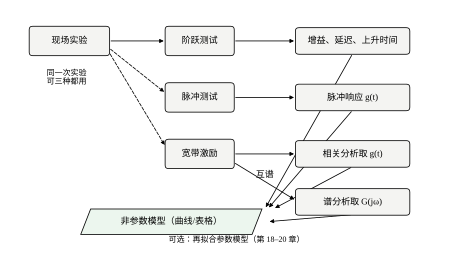
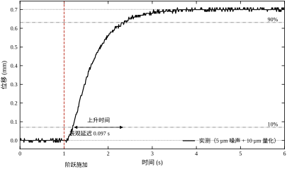
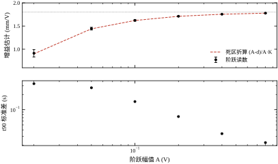
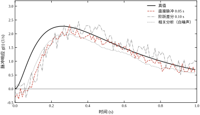
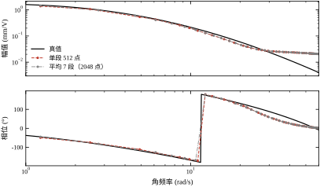
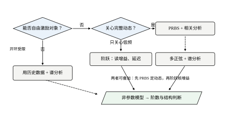

第 16 章把辨识拆成五步，最后一步“估计”留给了后面几章。可是现场拿到的第一段数据，通常并不具备跑最小二乘的条件：阶数不知道，噪声从哪个环节进来不知道，甚至连对象在测试幅值下是不是线性的都没有把握。此时硬套一个 ARX，算出十几个系数，也没有任何独立的东西可以拿来判断这些系数对不对。
非参数辨识提供的就是这个独立参照。它不假设阶数，不假设噪声模型，只回答一个问题：输入动一下，输出怎么走。 答案是一条曲线或一张表——阶跃响应、脉冲响应、频率响应。它不写成一阶、二阶，也不写成一串 a_i、b_j，而是直接给出“第几秒到了多少毫米”。
正因为不假设结构，非参数结果的可靠性只取决于两件事：激励有没有把该动的频段动到，噪声有没有把曲线糊掉。这两件事恰好是第 16 章反复强调的，所以本章可以把它当作第 16 章的直接延续：实验设计不变，只是把交付物从“一组系数”换成“一条曲线”。
对线性时不变对象，阶跃响应 s(t)、脉冲响应 g(t)、频率响应 G(j\omega) 三者严格等价：
g(t)=\frac{\mathrm{d}s(t)}{\mathrm{d}t},\qquad G(j\omega)=\int_{0}^{\infty}g(t)e^{-j\omega t}\,\mathrm{d}t \tag{17-1}
反过来，s(t)=\int_{0}^{t}g(\tau)\,\mathrm{d}\tau，而 g(t) 是 G(j\omega) 的逆傅里叶变换。所以“测阶跃”“测脉冲”“测频响”不是三种模型，而是同一个模型的三组坐标。选哪一种，取决于现场允许你施加什么激励、你关心哪一段信息。
坐标不同，误差的分布也不同。阶跃响应在时域上看最直观，但它的高频信息被积分压平了：想看清 20 rad/s 以上的相位，阶跃曲线几乎给不出线索。频率响应在频域上看得最清楚，但时域上的“第几秒到多少”要再做一次逆变换才能得到。脉冲响应介于两者之间：时间分辨率最好，代价是能量最少、最怕噪声。这条互补关系决定了后面四条路线的分工，也决定了本章为什么要把噪声账算得这么细。
本章仍然使用第 16 章的对象，即式 (16-1) 的三阶惯性加纯延迟：
G(s)=\frac{1.8}{(0.5s+1)(0.12s+1)(0.03s+1)}e^{-0.04s} \tag{17-2}
三个时间常数 0.5 s、0.12 s、0.03 s，直流增益 1.8，纯延迟 40 ms。它的脉冲响应在 0.26 s 达到峰值 2.273 s^{-1}，阶跃上到 90% 需要 1.358 s。这几个数字是本章全部实验的参照物：后面每一条估计曲线，都要和它们对齐。
用同一个对象有一个好处：第 16 章已经用参数方法把它的系数估出来了，本章的非参数曲线可以直接和“已知正确”的参数模型对照。真实项目里没有这种便利，替代办法是把非参数曲线当作后续参数辨识的验收集——这条用法会在 §17.6.10 展开。
按激励形式分，非参数辨识有四种主要做法，见图 17-1。

阶跃测试是现场最常用的。它只需要把执行器从一个值推到另一个值并保持住，对生产的影响最小，操作工也看得懂。它的产物是三个数：增益、表观延迟、上升时间。这三个数足以支撑大部分单回路整定，也是判断“对象有没有大延迟、有没有积分”的最快手段。缺点是它只激励了低频段，而且一次性把对象推离工作点。
脉冲测试在理论上最干净：输入是一个近似 \delta 函数，输出直接就是 g(t)。实际上做不到理想脉冲，只能打一个有宽度的方波，宽度与高度之间存在硬 trade-off——本章实验 2 会把这条 trade-off 量化成一张表。
相关分析用一段宽带信号（白噪声或 PRBS）激励，再拿输入输出的互相关去逼近脉冲响应。它的优点是能把噪声平均掉，缺点是要求激励信号本身有足够宽且已知的谱。PRBS 之所以流行，是因为它容易用继电器或 PLC 产生、幅值可控、谱宽可调。
谱分析直接估计频率响应，最常用的是 ETFE（empirical transfer function estimate），即互谱除以自谱。它的产物是 Bode 图，与控制器设计所需的语言完全一致；代价是方差大，需要分段平均来压。
四条路线的对照见表 17-1。表里最后一行“适用场景”是本章最实用的部分：现场选方法时，先看允许施加什么激励，再看关心时域还是频域，最后才看精度。
表 17-1 四条非参数路线的对照
| 路线 | 激励 | 产物 | 主要误差源 | 适用场景 |
|---|---|---|---|---|
| 阶跃 | 一个方向的阶跃 | K、d_2、t_{90} | 死区、截断、噪声 | 单回路整定、快速体检 |
| 脉冲 | 窄方波 | g(t) | 脉宽展宽、噪声放大 | 需要时间分辨率、对象快 |
| 相关分析 | 白噪声 / PRBS | g(t) | 输入谱形、直流漂移 | 允许长时间激励、信噪比低 |
| 谱分析 | 宽带或多正弦 | G(j\omega) | 分段数、泄漏 | 控制器设计、频域校核 |
四条路线不是互斥的。同一次实验的数据往往可以三种都用：一段 PRBS 记录既能做相关分析，也能做谱分析；一段阶跃记录既能读三个特征数，也能做差分得到脉冲响应。图 17-1 里从“现场实验”出发的三条虚线，说的就是这个意思。
如果把参数辨识比作手术，非参数辨识就是术前体检。体检不告诉你病灶的确切位置，但能告诉你该挂哪个科。这个比喻在工程上有三层具体含义。
第一层，非参数曲线能直接给出结构判断。本章对象的阶跃响应在起步后按 t^3 增长：t=0.01 s 时 y/y(\infty)=8.3\times10^{-5}，与 t^3/(6T_1T_2T_3)=9.3\times10^{-5} 只差 11%，三阶的指纹在最初十毫秒就能看出来。反过来，如果一条实测阶跃响应在延迟后 10 ms 内的上翘就明显快于 t^3，那么对象里一定有一个小于 0.03 s 的极点没被建模，此时无论把 ARX 阶数加到多少，这个极点都只能靠高频零极点对去“凑”，而凑出来的模型在别的工况下会立刻失效。阶数不是扫出来的，是看出来的——先看一眼，再扫，能省掉一半试错。
第二层，非参数曲线能给出延迟的真实量级。第 16 章用互相关估延迟，分辨率受采样周期限制；本章的表观延迟读数是 0.116 s，而真值是 0.04 s。这两个数差了三倍，原因不是估计错了，而是“2% 穿越点”本身就包含了三个惯性环节的起始段。§17.3.2 会把这件事算清楚：把 0.116 s 当成纯延迟填进控制器，Smith 预估器会补过头，补出一个 76 ms 的假延迟。
第三层，非参数曲线是最好的验收集。参数模型拟合完之后，把它仿真出的阶跃响应和实测阶跃响应画在同一张图上，重合不重合一眼就能看出来，不需要任何统计量。第 16 章 §16.7.8 提到的“0.1–2 rad/s 应重合到 3 dB 内”，本质上就是用非参数结果给参数模型判卷。
这三层之外，还有一组更便宜的判断，全靠曲线的“形状特征”。阶跃响应有没有超调，直接回答“有没有共轭复极点”：本章对象单调上升、无超调，所以三个极点都是实数，参数辨识时不必去试二阶振荡结构。末段是否还在缓慢上升，回答“有没有积分环节”：若 5 倍时间常数后曲线仍以固定斜率爬升，说明对象含 1/s，此时增益的定义要改成“斜率增益”，否则读数会随记录长度一直变大。脉冲响应过零几次，回答“阶数下界”：过零一次至少说明有两对时间尺度相差较大的极点，过零两次说明结构更复杂。
这三条形状判断不需要任何计算，看曲线就能得，却能把参数辨识的搜索空间砍掉一大半。它们也正是“先体检、后手术”最实际的价值：不是给出精确参数，而是排除掉一大类不可能的结构。
场景一：一台包装机的送膜轴，只能单向运行。开环打阶跃会让膜松掉，产线要停线重穿。现场能做的只有两种：一是在正常运行时叠加一个小幅值 PRBS，用相关分析取动态；二是利用每次换卷时的自然阶跃，攒够几十次再对齐平均。前者要求激励幅值足够小以保证不影响张力，后者要求每次阶跃的初值、幅值都记下来。两个做法都指向同一个前提：非参数辨识可以只用“运行时数据”，这是它相对于阶跃测试的最大优势。
场景二：一台大惯量转台，脉冲打不进去。执行器的加速度限幅决定了最短脉宽 0.2 s，而对象的上升时间是 1.15 s，脉宽与上升时间之比接近 1:6。此时直接脉冲法给出的是一个被 0.2 s 窗口平滑过的响应，峰值必然偏低——本章实验 2 里 0.2 s 脉宽的峰值误差是 -5.18\%，而 RMSE 反而升到 0.622，说明平滑带来的偏差比噪声降低带来的收益更大。正确做法是改用阶跃差分或相关分析，而不是硬把脉宽压窄。
场景三：一台温控箱，时间常数 20 min。任何一次阶跃测试都要等两小时才能读数稳定，而生产排程只给一小时窗口。此时唯一的出路是“少等”：接受截断误差，用模型外推补足稳态。本章实验 5 给的就是这条账：持续时间取 2 s（约 4 倍主导时间常数）时读数偏低 2.78%，取 5 s 时偏低 0.01%。换算到 20 min 的对象上，一小时窗口相当于 3 倍时间常数，读数大约偏低 5%，这个偏差必须在报告里写明，不能当成“测出来的真值”。
三个场景对应三种约束：不能开环、执行器不够快、时间不够长。它们都不是算法问题，而是“在约束下选哪条路线”的问题。本章 §17.5 会把这张选择表做完整。
本章按“先定义、再推导、后落地”的顺序展开，与图 17-1 的四条路线对应。
§17.2 给定义：三种非参数表示、阶跃读数的四个特征量、离散脉冲响应的量纲、ETFE 与相干函数。§17.3 做推导：阶跃读数与真值的关系、死区折算、表观延迟的解析式、脉冲法的噪声放大、相关分析的两种归一、ETFE 的方差。§17.4 讲实现：采样周期怎么选、阶跃测试怎么实施、相关分析和谱分析怎么写、结果怎么存。§17.5 讲边界：什么情况下不该用非参数、现场测试的安全与工时账、交付物该包含什么。§17.6 用六个实验把上述结论逐个量化，每个数字都能由 ch017_sim.py 复算。§17.7 给决策流程、常见错误表和与后续章节的接口。
全章围绕一个判断：这条曲线，是在描述对象，还是在描述噪声。 非参数方法没有结构约束可以“兜底”，一旦激励不足或噪声过大，曲线会照样画出来，只是画的是噪声。能不能看出这一点，是本章要训练的核心能力。
非参数模型是“输入输出之间的映射”，这个映射可以用三种自变量写出来：时间（阶跃）、时间（脉冲）、频率（频响）。定义本身不难，难的是量纲——本章实验里最容易出错的地方，几乎都在量纲上。
设输入 u 的单位是 V，输出 y 的单位是 mm。三个量的单位分别是：
三者之间的关系已由式 (17-1) 给出。要注意的是，工程上说的“脉冲响应”经常指离散脉冲响应 g_k，它是无量纲的（每 V 输入对应多少 mm 输出）。两者的换算是 g_k\approx T_s\,g(t_k)，即离散序列是连续曲线在采样点上的面积切片。本章 §17.3.4 会看到，漏掉这个 T_s 会让相关分析的结果差 100 倍——实验里第一次跑出 -99\% 的误差，原因就是它。
对线性时不变对象，任意输入下的输出是脉冲响应与输入的卷积：
y(t)=\int_{0}^{\infty}g(\tau)\,u(t-\tau)\,\mathrm{d}\tau \tag{17-3}
把 u 取成单位阶跃，得到 y(t)=\int_0^t g(\tau)\,\mathrm{d}\tau=s(t)；把 u 取成 \delta(t)，得到 y(t)=g(t)；两边做傅里叶变换，得到 Y(j\omega)=G(j\omega)U(j\omega)。三条路线之所以等价，就是因为它们都在解同一个卷积方程，只是选择了不同的“探针”。
这里有一个容易被忽略的前提：式 (17-3) 成立要求对象线性且时不变，并且初始条件为零。实际测试中“零初始条件”意味着必须先让对象在工作点上稳定下来再施加激励，否则阶跃响应里会混进初始瞬态。§17.4.2 会把这条写成操作步骤。
阶跃响应里能读出的量很多，工程上常用的只有四个，定义如下。
稳态增益：
\hat K=\frac{y_{\mathrm{ss}}-y_0}{\Delta u} \tag{17-4}
其中 y_0 是阶跃施加前一段的均值，y_{\mathrm{ss}} 是末段均值，\Delta u 是指令幅值。注意分母用的是指令幅值而不是执行器实际输出幅值——这个区别在 §17.3.1 会变成一条死区折算公式。
表观延迟（2% 穿越）：
d_2=\min\left\{t:\;y(t)-y_0\ge 0.02\,(y_{\mathrm{ss}}-y_0)\right\} \tag{17-5}
上升时间：
t_r=t_{90}-t_{10} \tag{17-6}
其中 t_{10}、t_{90} 分别是响应达到总变化量 10% 与 90% 的时刻。
这四个量的定义看似随意，每一处都有原因。为什么用 2% 而不是 0%：零穿越点会被噪声与量化淹没；本章 0.72 mm 的阶跃跳变上，2% 相当于 14 μm，约为 5 μm 噪声的三倍，是一个“噪声打不穿”的门槛。为什么用 10%–90% 而不是 0%–100%：两端都是渐近的，用端点定义会让上升时间对噪声极其敏感；10%–90% 落在曲线最陡的区间，读数最稳。为什么用末段均值而不是最后一个点：单点读数带一个噪声样本的方差，取末段 50 个点平均可以把方差压到 1/50。
这三个选择都能折算成具体的精度。末段 50 点平均后，均值的标准差是 5/\sqrt{50}=0.7 μm，除以 720 μm 的跳变是 0.10%——这正好是表 17-7 里 0.40 V 时增益标准差的量级（实测 0.20%，多出来的一倍来自量化）。若改成末段 10 点平均，这个数会变成 0.22%，与实测一起翻倍；若用最后一个点，则变成 0.7%，比实测差三倍半。平均几个点不是随便定的，它直接决定增益读数的精度上限。
这些选择的代价是读数不等于参数。以本章对象为例，式 (17-2) 的纯延迟是 40 ms，而 2% 穿越点读到 116 ms，二者相差 76 ms。这不是误差，是定义带来的系统性差异。§17.3.2 会给出解析式，说明这 76 ms 是从哪来的、什么情况下可以忽略。
采样之后，卷积变成求和：
y[k]=\sum_{j=0}^{k}g_j\,u[k-j] \tag{17-7}
g_j 就是离散脉冲响应，也叫 Markov 参数。它的物理含义很直接：在第 0 拍给一个单位脉冲，第 j 拍的输出就是 g_j（假设初值为零，且脉冲宽度等于一拍）。
g_j 无量纲，g(t) 的量纲是 s^{-1}，二者关系是
g(t_k)\approx \frac{g_k}{T_s},\qquad g_k\approx T_s\,g(t_k) \tag{17-8}
这个换算是离散与连续之间唯一的桥。它的误差来自“一拍内的能量被集中到采样点上”，量级是 O(\omega T_s)；本章 T_s=0.01 s、关心到 60 rad/s，\omega T_s=0.6，在这个频段已经不能算小，所以式 (17-8) 只在高频段失效，低频段够用。
式 (17-7) 还有一个用途：它是第 18–20 章所有参数模型的公共起点。ARX 的系数、状态空间的 (A,B,C,D)、甚至阶跃响应的前若干点，都可以由 g_j 表示。§17.4.5 会给这条桥的具体用法。
对式 (17-7) 两边做离散傅里叶变换，得到 Y(e^{j\omega T_s})=G(e^{j\omega T_s})U(e^{j\omega T_s})。把它解出来，就是最朴素的频率响应估计：
\hat G(e^{j\omega T_s})=\frac{Y_N(e^{j\omega T_s})}{U_N(e^{j\omega T_s})}=\frac{\sum_{k=0}^{N-1}y[k]e^{-j\omega kT_s}}{\sum_{k=0}^{N-1}u[k]e^{-j\omega kT_s}} \tag{17-9}
这就是 ETFE。它的形式简单到让人怀疑，但性质并不简单：在没有噪声时，\hat G 在 DFT 频点上精确等于真值（只差一个 e^{-j\omega T_s/2} 的零阶保持相位）；有噪声时，误差是 \hat G-G=N_y/U，分母小的地方误差就大。
把一段长记录切成 M 段、每段做一次 ETFE 再平均，得到工程上常用的 H1 估计：
\hat G(e^{j\omega T_s})=\frac{\sum_{i=1}^{M}Y_i(\omega)U_i^{*}(\omega)}{\sum_{i=1}^{M}\left|U_i(\omega)\right|^{2}} \tag{17-10}
它等价于“互谱除以自谱”，\hat G=S_{uy}/S_{uu}。分子分母都做了平均，噪声在分子上被平均掉、在分母上被平均成正的偏置，所以只要 M 足够大、输入谱在关心频段不为零，估计就收敛。
单段 ETFE 与平均后的 H1 有一个容易被误解的差别。单段 ETFE 的方差与 |U(\omega)|^2 成反比，而记录越长，单个频点上的 |U|^2 越大，方差确实按 1/N 下降；但与此同时频点也变密了，画在图上就是“点更多、每点都抖”。曲线看起来没变好，是因为你把新增的信息都花在了更密的点上，而不是花在压低已有频点的抖动上。 分段平均改变了这件事：它把长记录切成 M 段，每段的频点稀疏、方差大，平均后每个频点的方差降到 1/M，点还是那么多，抖动却小了。这就是 §17.6.6 里“段长从 512 增到 1024、误差先降后平”的直接解释。
ETFE 有一个讨厌的性质：无论数据里有没有信息，它都会画出一条曲线。判断“这条曲线是不是噪声”，靠相干函数：
\gamma^{2}(\omega)=\frac{\left|S_{uy}(\omega)\right|^{2}}{S_{uu}(\omega)S_{yy}(\omega)},\qquad 0\le\gamma^{2}\le1 \tag{17-11}
\gamma^2=1 表示输出的全部功率都能由输入线性解释；\gamma^2=0 表示两者无关。中间值有两个来源：噪声（输出里有输入解释不了的部分）和非线性（同一输入在不同幅值下响应不同）。
工程上把 \gamma^2<0.5 的频段视为“不可用”，不要在这些频点上做模型拟合或控制器设计。本章实验 4 里，分段 512 点时 1–10 rad/s 的平均相干是 0.920，分段 4096 点时升到 0.998——同一段数据，只是平均的段数不同，可信度就差了一档。这条对比说明相干函数不仅衡量数据质量，也衡量你用掉多少数据。
两个来源可以用一次实验分开：把激励幅值加倍，再算一次相干。 若相干明显上升，说明原来那一段是被噪声压住的，加大幅值就能救；若相干几乎不动，说明输出里有一部分根本不由输入线性决定——那是非线性、时变或未测扰动，加大幅值只会让它更严重。这个判别只需要一次额外测试，比争论“是噪声还是非线性”有效得多。本章对象在幅值越过死区、又没进饱和时相干最高，正是因为这两条边界之外才会有额外的非线性成分。
把式 (17-7) 与式 (17-3) 对照可以看出，阶跃、脉冲、相关、谱四条路线都在估计同一个 g，区别只在“用什么输入去激发它、用什么算子把它从数据里取出来”：
四条路线的误差结构完全不同，但都遵守同一条守恒律：时间分辨率与噪声抑制不能同时最优。脉冲法的时间分辨率是一拍，代价是每个点只有一个样本的能量；相关法把 N 个样本的能量都用来估一个点，代价是时间分辨率退化到输入自相关的宽度。§17.3 会把这条守恒律写成公式。
把式 (17-7) 按样本排开，写成一列向量：
\underbrace{\begin{bmatrix}y[n_{\rm lag}]\\ y[n_{\rm lag}+1]\\ \vdots\\ y[N-1]\end{bmatrix}}_{Y}=\underbrace{\begin{bmatrix}u[n_{\rm lag}]&u[n_{\rm lag}-1]&\cdots&u[0]\\ u[n_{\rm lag}+1]&u[n_{\rm lag}]&\cdots&u[1]\\ \vdots&&&\vdots\\ u[N-1]&u[N-2]&\cdots&u[N-n_{\rm lag}]\end{bmatrix}}_{\Phi}\underbrace{\begin{bmatrix}g_0\\ g_1\\ \vdots\\ g_{n_{\rm lag}-1}\end{bmatrix}}_{g}
这就是非参数辨识的回归形式，和后面第 18 章的最小二乘是同一个方程，只是未知数换成了 g_j。能不能唯一解出 g，取决于 \Phi 的秩与条件数；而 \Phi 完全由输入序列 u 的移位堆叠而成，所以输入的性质决定了能辨识什么，这一点和数据量无关。
最极端的是常值输入。u 恒定，\Phi 的所有列只差一个常数倍，秩为 1，只能定出一个数——总增益。这正是“不打阶跃就没有动态信息”的代数解释。
阶跃输入比常值好，但好得有限。\Phi 的列是彼此错位的阶跃，形式上是满秩的，但相邻两列几乎平行，条件数随 n_{\rm lag} 迅速恶化。工程后果是：用阶跃数据直接解这个方程，解出的 g_j 会剧烈振荡，正负交替；而把它们累加回 s(t) 却相当准。阶跃数据里真正可靠的信息是积分量，不是微分后的 g_j——这与 §17.3.3 说的“阶跃差分放大噪声”是同一件事的两种说法。
PRBS 之所以有效，是因为它把能量铺到了很多频点上。7 级 PRBS 的周期是 2^7-1=127 拍，钟周期 0.05 s 时周期 6.35 s，基频 1/6.35=0.157 Hz，即 0.99 rad/s；它的谱线间隔就是 0.99 rad/s，在 0–60 rad/s 内有一百多条谱线，每条都携带信息。相比之下，单频正弦只给一个频点，多正弦给若干个频点，都不如 PRBS 铺得均匀。
“持续激励”这个词说的就是这件事：输入在关心的频段上必须有非零功率，而且不能只有一两个频点。 判据可以写成输入自相关矩阵正定，也可以写成 S_{uu}(\omega)>0 在关心频段成立。工程上不必验证正定性，只需做一件事：把输入谱画出来，看关心频段内有没有凹陷。若某频段的输入功率比峰值低 40 dB 以上，该频段的辨识结果基本是噪声。
条件数也有直观的工程含义。白噪声输入的 \Phi^{\mathsf T}\Phi 接近对角，条件数小，解稳定；PRBS 的 \Phi^{\mathsf T}\Phi 是近似 Toeplitz 的，条件数比白噪声大但仍可控；阶跃的条件数随记录长度平方增长。这就是本章推荐“大幅值阶跃定增益、PRBS 定动态”的代数依据：两者在 \Phi 的条件数上互补。
前面所有式子都默认记录无限长、初值为零、没有趋势。真实数据三条都不满足，于是有三笔不可避免的代价。
第一笔，泄漏。 记录长度不是信号周期的整数倍时，能量会从主频点漏到邻近频点。矩形窗的第一旁瓣只比主瓣低 13.3 dB，Hanning 窗低 31.5 dB，代价是主瓣从 2 个频点展宽到 4 个频点。这就是实验 4 里 512 点分段低频偏高、误差 0.74 dB 的来源：主瓣 4 个频点相当于 4.9 rad/s，而 1–10 rad/s 整段只有约 7 个频点，主瓣吞掉了大半频段。分辨率与泄漏是一对矛盾：窗越长主瓣越窄、泄漏越小，但可用于平均的段数越少。
第二笔，截断。 阶跃没等到稳态就停止记录，读数必然偏低，偏差随截止时刻按 e^{-t_c/T} 衰减。本章 2 s 时偏低 2.78%，5 s 时 0.01%（表 17-9）。这笔代价有明确的对价关系：多等一倍时间，误差从一个可观的百分数降到看不见，但再等下去收益迅速归零。
第三笔，趋势与初值。 对象在工作点上缓慢漂移，或者测试开始时还没完全稳定，这些成分都落在低频，与阶跃的稳态信息混在一起。去趋势能压掉一部分，但去趋势的阶次本身是一个选择：一阶去趋势会把极慢的动态也当成漂移扣掉，使增益偏低；不去趋势则漂移全部计入增益，使增益偏高。本章的仿真里没有加漂移，所以这一笔代价没有进入表 17-9；现场数据里它常常是最大的一项。
三笔代价的共同点是它们都是偏差，不是方差。多测几次不能让泄漏消失，也不能让截断误差变小。这与 §17.6.8 的总结一致：非参数辨识的主要矛盾在偏差这一侧。
除了记录长度，采样本身还会引入两处与数据量无关的偏差。它们都小到容易被忽略，但在中高频段会变成相位误差的主要来源。
第一处，零阶保持的半拍相位。 数字系统里执行器在整拍内保持常值，所以离散模型的频响比连续对象多一个 e^{-j\omega T_s/2} 因子。ETFE 估的是离散对象的频响，若直接与连续传递函数比，就会多出 \omega T_s/2 的相位滞后。本章 T_s=0.01 s：1 rad/s 时 0.005 rad（0.29°），可以不管；10 rad/s 时 0.05 rad（2.9°），开始有影响；60 rad/s 时 0.3 rad（17.2°），已经是可观的一项。修正只需在估计结果上乘 e^{+j\omega T_s/2}，一行代码的事，但忘了它就会把半拍延迟错记到对象头上。
第二处，延迟取整。 仿真里把 40 ms 的纯延迟折算成 40/10=4 拍，正好整除，没有误差。现场很少这么巧：若真实延迟是 45 ms，按 4.5 拍处理不了，取 4 拍差 5 ms，取 5 拍多 5 ms。5 ms 在 10 rad/s 上是 2.9°，在 60 rad/s 上是 17°——与半拍相位同量级。遇到不整除的延迟，要么提高采样率让一拍足够小，要么在模型里显式写出分数延迟，不要靠四舍五入。
两处偏差还有一条共同的处理原则：它们可以精确补偿，所以不该出现在“模型不准”的讨论里。 参数辨识的残差里若出现随频率线性增长的相位误差，第一件事就是查这两项，而不是加阶数。
式 (17-4) 的分母是指令幅值 \Delta u，而真正进入对象的是执行器输出。本章的执行器有 10 mV 死区，所以实际幅值是 \Delta u-d（只要 \Delta u>d）。于是读数与真值的关系是
\hat K=\frac{K(\Delta u-d)}{\Delta u}=K\left(1-\frac{d}{\Delta u}\right) \tag{17-12}
这条式子解释了一个很常见的现象：小幅值阶跃测出的增益总是偏低，而且偏低的比例随幅值反比变化。本章实验 1 的数据把这条曲线量了出来：幅值 0.02 V 时折算系数 0.500，读数 0.9123；幅值 0.05 V 时折算 0.800，读数 1.4439；幅值 0.40 V 时折算 0.975，读数 1.7555；幅值 0.80 V 时折算 0.988，读数 1.7777。每一行的读数都比 1.8\times 折算系数略高一点点（例如 0.02 V 那行是 0.9123 对 0.900），差值来自噪声让末段均值略偏正，约 1%。
这条式子还给出一个实用的判据：若要求增益误差小于 2%，则 d/\Delta u<0.02，即 \Delta u>50d。10 mV 的死区要求阶跃幅值至少 0.5 V。可幅值又不能太大，否则会撞上饱和或者把对象推出线性区。可用窗口是 \Delta u\in(50d,\;u_{\mathrm{sat}})，窄的时候只有几倍，这就是为什么现场阶跃测试经常卡在“幅值不够大、读不准”和“幅值太大、非线性”之间。
式 (17-12) 还提醒一件事：死区折算与噪声是两个独立误差。噪声让读数上下抖动，标准差随幅值下降而上升（表 17-7 里 0.02 V 时是 8.62%，0.80 V 时是 0.10%）；死区让读数单向偏低，且幅值越小偏低越多。二者叠加的结果是“小幅值既不准又不稳”，所以现场原则很简单：在不出非线性区的前提下，幅值取尽可能大。
纯延迟 L 会让响应整体右移，而惯性环节会让响应“慢慢起步”。2% 穿越点读到的是两者之和，所以 d_2>L。这个差值有多大，取决于阶数。
一阶对象可以精确算。y/y(\infty)=1-e^{-(t-L)/T}，令它等于 0.02：
d_2=L-T\ln(1-0.02)=L+0.0202\,T \tag{17-13}
即多出来的部分只有时间常数的 2%。所以一阶对象的 2% 读数几乎就是纯延迟，用 d_2 当 L 不会出大错。
高阶对象完全不同。对 n 个时间常数相同的极点，y/y(\infty)=1-e^{-x}\sum_{k=0}^{n-1}x^{k}/k!（x=t/T），解 2% 得到 x_{2\%}：n=1 时 0.020，n=2 时 0.215，n=3 时 0.567，n=4 时 1.016。阶数每加一，2% 穿越点相对时间常数的比例就翻一倍以上。 也就是说，同样是 0.5 s 的时间常数，一阶对象读出的延迟是 0.01 s，四阶对象读出的延迟是 0.51 s——后者有一半是“假”的。
本章对象是三个不等的极点，比例落在中间。实验 0 在 1 ms 采样、无噪声、旁路非线性的条件下读到 d_2=0.1160 s，减去纯延迟 0.040 s 得 0.076 s，除以主导时间常数 0.5 s 等于 0.152：
\frac{d_2-L}{T_1}=\frac{0.1160-0.0400}{0.500}=0.152 \tag{17-14}
这个数比三阶等极点的 0.567 小得多，原因是另外两个时间常数（0.12 s、0.03 s）比主导的小一个量级以上，它们只在起步的头几十毫秒起作用，很快就不再拖后腿。
把 0.116 s 当纯延迟用，后果可以算。Smith 预估器（见第 47 章）会按这个数补一个延迟环节，多补的 76 ms 在 10 rad/s 上相当于 0.076\times10=0.76 rad，即 43.5° 相位；在 2 rad/s 上相当于 8.7°。低频段影响不大，一到中频就把相位裕度吃掉一大半。补偿过头比不补偿更糟，因为它会把一个本来稳定的回路推向振荡。
正确做法是区分两个量。若控制器需要 FOPDT 形式，用半规则从三阶模型折算：保留最大时间常数、把第二个折半并入，T=T_1+T_2/2=0.56 s，L_{\mathrm{eff}}=L_0+T_2/2+T_3=0.13 s。这个等效延迟已经吸收了惯性，与读数的 0.116 s 同量级，但它是为控制器设计服务的，不能再当成“物理延迟”往 d_2 上加。若只需判断“有没有大延迟”，看 d_2 与上升时间之比即可：本章是 0.116/1.154=0.10，属于延迟可忽略的一类；比值超过 0.3 才需要考虑专门的延迟补偿。
这个 0.152 有两个性质，决定了它能不能被搬到别的对象上。
第一，它对时间尺度是线性的。 比例 0.152 只取决于小时间常数与主导时间常数的比值（这里是 0.24 与 0.06）。若整个对象快一倍或慢一倍，d_2-L 也跟着快一倍或慢一倍，比例不变。所以现场估算时不必知道绝对时间，只要知道“第二、第三个时间常数是主导的几分之一”，就能估出表观延迟的假成分。反过来说，若两个对象的 d_2/T_1 差很多，那多半不是时间尺度不同，而是极点分布不同——这是一个便宜的结构诊断。
第二，它对小时间常数敏感，但分辨率不高。 固定 T_1=0.5 s、T_2=0.12 s，把 T_3 从 0.015 s 增到 0.12 s，d_2 依次是 0.107、0.117、0.132、0.153 s——T_3 翻一倍只让 d_2 加 15 ms；固定 T_3、把 T_2 从 0.06 s 增到 0.24 s，d_2 从 0.101 s 增到 0.140 s。方向上说得通：时间常数越大，起步越慢，2% 点越晚。但几十毫秒的灵敏度意味着用它反演小时间常数是不划算的——噪声与量化本身就有这个量级的抖动。要精确的小时间常数，去脉冲响应的起始段或 Bode 图的高频段。
这两条性质合起来给了一个实用结论：d_2 适合判断“量级”和“趋势”，不适合反演“结构”。要结构，去脉冲响应或 Bode 图的高频段；要量级，一把 d_2 就够。
理想脉冲的能量是无穷大的瞬时功率，物理上做不到。可实现的是一段宽度 w、幅值 A 的方波，它的“面积”是 A\cdot w。把输出除以面积，就得到脉冲响应的估计：
\hat g(t)=\frac{y(t)}{A\,w},\qquad \sigma_{\hat g}=\frac{\sigma_y}{A\,w} \tag{17-15}
式 (17-15) 的后半是噪声底：脉宽越窄、幅值越小，噪声被放大得越厉害。本章 A=1 V、\sigma_y=5 μm，取 w=0.02/0.05/0.10/0.20 s，噪声底依次是 0.250、0.100、0.050、0.025 s^{-1}。真值峰值是 2.273 s^{-1}，所以最窄的脉宽下噪声底已经到峰值的 11%。
但脉宽不是越小越好。真实输入是一个宽度 w 的矩形，输出是 g 与矩形的卷积，峰值必然被抹平。峰值被压低的比例大致按 (w/t_r)^2 增长：w 从 0.02 增到 0.20，抹平从可以忽略增到 5% 上下。于是两侧夹出了一个最优区间。
抹平的量可以再算细一点。矩形脉冲的频域是 \mathrm{sinc}(\omega w/2)，w=0.05 s 时第一个零点在 2\pi/w=125.7 rad/s，所以关心频段（0–60 rad/s）全都落在主瓣内；20 rad/s 处的衰减只有 |\sin0.5|/0.5=0.959，即 −0.36 dB。这说明方波脉宽主要伤害的是峰值附近的高频成分，而不是整体幅值——所以 §17.4.6 校验二里“面积仍然对”是有道理的：面积对应直流，直流处 \mathrm{sinc}=1 不受影响。
实验 2 的数据把这条 trade-off 摆得很清楚，见表 17-2。
表 17-2 直接脉冲法：脉宽与噪声的权衡（真值峰值 2.273 s^{-1}）
| 脉宽 / s | 峰值 / s^{-1} | 峰值误差 / % | 噪声底 / s^{-1} | RMSE / s^{-1} |
|---|---|---|---|---|
| 0.02 | 2.460 | +8.21 | 0.250 | 0.627 |
| 0.05 | 2.325 | +2.28 | 0.100 | 0.397 |
| 0.10 | 2.233 | −1.75 | 0.050 | 0.445 |
| 0.20 | 2.155 | −5.18 | 0.025 | 0.622 |
最窄的 0.02 s 误差是正的 8.21%，这与“抹平只会压低峰值”的直觉相反。原因是峰值取的是整条曲线上的最大值：噪声底 0.25 时，几十个噪声样本里的最大值期望比均值高出约 2.5 倍标准差，也就是 0.6 左右，足以把 2.27 的峰值抬到 2.46。窄脉冲的误差主要来自噪声挑高点，宽脉冲的误差主要来自平滑压峰值，两者在 0.05–0.10 s 之间交叉，误差落到 2% 以内。这个区间恰好也是本章对象上升时间（1.15 s）的 1/20 到 1/10，可作为一般经验。
阶跃差分法避开了“打脉冲”的硬件限制：用同一段阶跃数据，取间隔 m 拍的两点做差，
\hat g[k]=\frac{y[k+m]-y[k]}{\Delta u\cdot m\,T_s},\qquad \sigma_{\hat g}=\frac{\sqrt{2}\,\sigma_y}{\Delta u\,m\,T_s} \tag{17-16}
噪声底与 m 成反比，时间分辨率也是 m 拍。m=2 时噪声底 0.884、RMSE 0.976；m=5 时 0.354、0.474；m=10 时 0.177、0.444；m=20 时 0.088、0.609。最好的点落在 m=5 到 10 之间，与直接脉冲的结论一致。
注意式 (17-16) 里 \Delta u 在分母。阶跃差分的噪声底比直接脉冲低，靠的是 \Delta u=0.4 V 这个“已经存在的”大信号，而不是靠更窄的时间窗。换句话说，阶跃差分是把阶跃测试的低频能量借来估高频响应，借得越多（m 越小），利息（噪声）越高。
相关分析法的出发点是“用一段已知的输入去和输出做互相关”。设 u、y 都已去均值，则
r_{uy}(\tau)=E\left[u(t-\tau)y(t)\right]=\int_{0}^{\infty}g(\theta)\,r_{uu}(\tau-\theta)\,\mathrm{d}\theta \tag{17-17}
即互相关等于“脉冲响应与输入自相关的卷积”。这个式子说明：只有当 r_{uu} 接近 \delta 函数时，r_{uy} 才直接正比于 g。
白噪声满足这一条。r_{uu}(\tau)=\sigma_u^{2}\delta(\tau)，代入式 (17-17) 得 r_{uy}(\tau)=\sigma_u^{2}g(\tau)，于是
\hat g_k=\frac{r_{uy}(k)}{r_{uu}(0)\,T_s},\qquad r_{uu}(0)=\sigma_u^{2} \tag{17-18}
分母除 T_s 是把离散系数换算成连续脉冲响应，§17.2.1 提醒过这一步。
PRBS 不满足这一条。它的自相关是一个三角波：r_{uu}(l)\approx\sigma_u^{2}(1-|l|/N_c)，|l|<N_c，N_c 是钟周期对应的拍数。三角波的面积是 \sigma_u^{2}N_c，比峰值 \sigma_u^{2} 大 N_c 倍。若仍用 r_{uu}(0) 归一，估计结果会被放大 N_c 倍：
\hat g_k=\frac{r_{uy}(k)}{\left[r_{uu}(0)+2\sum_{l\ge1}r_{uu}(l)\right]T_s} \tag{17-19}
括号里是自相关的面积（离散形式），对白噪声它等于 r_{uu}(0)，对 PRBS 它等于 r_{uu}(0)\cdot N_c。所以式 (17-19) 是更一般的写法，式 (17-18) 只是它在白噪声下的特例。
相关分析为什么能把噪声压得这么低，可以算清。每个滞后上的估计用了 N 对乘积求和，噪声按 1/\sqrt{N} 下降。本章 N=6000，1/\sqrt{6000}=1/77；而阶跃差分每个点只用到两个样本，噪声没有任何平均。两者之比应当是 77 倍，实测的随机误差之比是 0.177/0.0026=68 倍——吻合到 12% 以内，差的这部分来自 PRBS 相邻样本不完全独立（自相关在非零滞后上不为零，等效独立样本数比 6000 少一些）。
这就是“匹配滤波”这个名字的含义：相关分析把整段输入当成一个模板去和输出对齐，模板越长，平均得越彻底。代价写在式 (17-17) 里——模板的形状就是分辨率，r_{uu} 有多宽，估出的 g 就被抹平多宽。它用时间分辨率换噪声抑制，换的比例是 \sqrt{N} 对 N_c。
实验 3 把两种归一方式的差别量了出来，同一段 60 s 数据、同一个 PRBS，见表 17-3。
表 17-3 相关分析：两种归一方式的对比（真值峰值 2.273 s^{-1}）
| 输入 | 归一方式 | 峰值 / s^{-1} | 峰值误差 / % | RMSE / s^{-1} |
|---|---|---|---|---|
| PRBS 钟周期 0.05 s | r_{uu}(0) | 12.195 | +436.62 | 7.048 |
| PRBS 钟周期 0.05 s | 自相关面积 | 1.878 | −17.38 | 0.303 |
| PRBS 钟周期 0.20 s | r_{uu}(0) | 41.376 | +1720.64 | 29.087 |
| PRBS 钟周期 0.20 s | 自相关面积 | 1.774 | −21.96 | 0.348 |
| 白噪声 | r_{uu}(0) | 2.113 | −7.01 | 0.278 |
| 白噪声 | 自相关面积 | 2.158 | −5.03 | 0.264 |
误差的量级和理论完全对得上：钟周期 0.05 s 对应 N_c=5，理论上放大约 5 倍即 +400%，实测 +436.62%；钟周期 0.20 s 对应 N_c=20，理论 +1900%，实测 +1720.64%。多出来的部分被三角波的平滑抵消掉一些，所以比理论值略小。只要输入不是白噪声，用 r_{uu}(0) 归一就一定会差一个 N_c 倍，而且这个倍数写在你自己的 PRBS 参数里，一眼就能查出来。
改用面积归一之后，误差降到 -17\% 和 -22\%，仍是负的，且随钟周期变长而变大。这是分辨率造成的偏差：三角波宽度 2N_cT_s 把峰值抹平了，钟周期 0.20 s 时抹平窗口比脉冲响应的主峰还宽，峰值只能被压低。三个被估出的峰值时刻都落在 0.29–0.32 s，与真值 0.26 s 相差 1–2 拍，说明时延定位没坏，坏的是幅值。
这里有一个反直觉的结论。按式 (17-18) 估算随机误差，PRBS 那组的标准差约 0.0026 s^{-1}，而实测 RMSE 是 0.303——差两个数量级。也就是说，60 s 数据里相关分析的随机误差已经小到可以忽略，误差全部来自偏差。继续加长记录没有用，唯一的出路是把钟周期缩短，而缩短钟周期又会抬高噪声底。这就是 §17.2.7 那条守恒律的具体形态。
把 M 段估计平均，方差按 1/M 下降。近似地，幅值的相对标准差是
\frac{\sigma_{|\hat G|}}{|G|}\approx\frac{1}{\sqrt{M\,\gamma^{2}}} \tag{17-20}
\gamma^2 越接近 1，这条式子越准。M=31 时理论上是 18%，换算成 dB 约 1.4 dB；实验 4 在 1–10 rad/s 上实测幅值 RMS 是 0.74 dB，比理论好一倍，原因是白噪声输入在这个频段的相干函数接近 1，而且各频点误差并不完全独立。
这条式子里的 \gamma^2 不是装饰。由定义，1-\gamma^2=S_{vv}/S_{yy}，即相干 0.9 意味着输出功率里有 10% 是噪声解释不了的；相干 0.99 则只有 1%。所以 \gamma^2 直接把“每个频点的信噪比”换算成了一个 0 到 1 的数，而式 (17-20) 说：平均 M 段的效果，等价于把每个频点的有效信噪比提高 M 倍。更精确的推导还会带一个 (1-\gamma^2) 因子，相干接近 1 时它趋于零，简化式会把误差估得略大一些——这对工程判断是安全的方向。相干低到 0.5 时，简化式已经不可信，此时不要看估计值，先去看为什么相干这么低。
平均不是无止境的。实验 4 的数据显示：分段 512 点（31 段）幅值 RMS 0.74 dB、相位 RMS 4.76°、相干 0.920；分段 1024 点（15 段）降到 0.26 dB、2.39°、0.984；再往下分段 2048 点（7 段）是 0.31 dB、2.30°、0.994，分段 4096 点（3 段）是 0.30 dB、2.07°、0.998。从 31 段到 15 段收益明显，之后停在 0.3 dB 附近不再改善。
这个地板来自窗函数泄漏与频率分辨率。段越长，频率分辨率越高（0.024 Hz 对 0.195 Hz），但段数越少，平均越不充分；两者的乘积在 1024–2048 点之间达到平衡。工程上的选择原则由此而来：先把段长选到能分辨你关心的最窄峰，再尽量多分几段。 关心 1 rad/s 附近的谐振，段长至少要覆盖两个谐振周期；关心的是整体趋势，就可以把段切短多平均几次。
读数取的是末段均值，若记录在响应还没走完时截止，稳态就会被低估。对一阶对象，截止时刻 t_c 处的读数误差是
\frac{\hat K-K}{K}=-e^{-t_c/T} \tag{17-21}
要让误差小于 1%，需要 t_c\ge4.6T；小于 0.1%，需要 t_c\ge6.9T。
本章对象有三个时间常数，主导的是 0.5 s，但另两个极点会让收敛比一阶慢一些。实验 5 的数据是：持续 0.5 s 时读数 0.8123（-54.87\%）、1.0 s 时 1.4309（-20.51\%）、2.0 s 时 1.7500（-2.78\%）、3.0 s 时 1.7932（-0.38\%）、5.0 s 时 1.7999（-0.01\%）、8 s 与 12 s 都是 1.8000（-0.00\%）。
把实测值和式 (17-21) 对照：2 s 对应 e^{-4}=1.83\%，实测 2.78%，多出的 0.95 个百分点来自另外两个极点的负残差；3 s 对应 e^{-6}=0.25\%，实测 0.38%；5 s 对应 e^{-10}=0.005\%，实测 0.01%。一阶公式给出的时长是必要条件，不是充分条件，实际取 5 倍主导时间常数比较稳妥。
现场还要多留一段。阶跃前需要至少 5 倍时间常数让对象稳定在工作点上（否则 y_0 里混着上一次动作的残余），阶跃后需要 5 倍时间常数读稳态，中间还要留出执行器动作的过渡。按这个算法，一个 0.5 s 的对象一次完整测试要 6 s 左右；一个 20 min 的对象要 4 h。测试时长是选路线时第一个要算的账，算不下来就得换方法。
能做的三件事：判断阶数与延迟量级；给参数模型当验收集；在完全不知道结构时先给出一个可用的频域描述，供控制器初步设计（例如用 ETFE 曲线直接读穿越频率和相位裕度）。
不能做的三件事。不能外推：曲线只在激励过的频段和幅值范围内有效，PRBS 只激励到 20 rad/s，就不能拿它判断 100 rad/s 的相位。不能给解析式：非参数模型是一张表，控制器设计需要 K、T、L 这样的参数，中间必须做一次拟合，而拟合会引入新的误差。不能用于不稳定对象：开环不稳定的对象在阶跃或 PRBS 激励下发散，相关分析和 ETFE 都失去意义，这类对象只能在闭环下辨识（见第 21 章）。
还有一条容易忽略的限制：非参数方法假定对象在工作点附近线性。若测试幅值把对象推过了饱和或死区边界，得到的曲线是“平均后的等效线性模型”，它在小信号下不成立。§17.5 会把这条写成幅值选择的现场规则。
本章的实验全部用阶跃与随机类输入，没给正弦留位置。但频域路线里正弦类激励有一席之地，原因是它在“单频信噪比”上有别的方法给不了的优势。
单个正弦激励下，u=A\sin\omega_0t，输出的同频分量可以用相关法（相当于锁定放大器）提出来。这一步的噪声抑制能力是 1/\sqrt{N} 量级，且不受输入谱形状的限制——因为所有能量都压在一条谱线上。若关心的是 3 rad/s 处的相位，用 PRBS 时那条谱线只分到总能量的很小一份，用正弦则全部能量都在那里。这就是为什么精密伺服、液压系统的频响测试至今仍用扫频正弦。
多正弦把 L 个频率不同的正弦叠加，一次测试覆盖 L 个频点。它的麻烦在峰值因数：若 L 路同相位，峰值是单路幅值的 L 倍，10 路各 0.1 V 就是 1.0 V，正好撞上本章执行器的饱和。工程上通过给每路一个不同的初相位（Schroeder 相位）把峰值压到单路幅值的 2–3 倍，代价是波形不再对称，读谱时仍需做完整的 FFT 而不是单频相关。
PRBS 与多正弦的谱形状也不同，这一点常被忽略。PRBS 经过零阶保持后，谱包络带一个 \mathrm{sinc}(\omega T_s/2) 因子；本章 T_s=0.05 s 时，60 rad/s 处该因子等于 |\sin1.5|/1.5=0.665，即 −3.5 dB。也就是说同样的幅值，PRBS 在高频段的实际激励比低频弱 3.5 dB，辨识出来的高频段信噪比自然差一截。多正弦可以按需要把幅值谱设计成平坦甚至上升的，这是它的第二个优势。
代价是对对象的“折腾”更大。正弦激励的峰值因数低但持续时间长，对机械系统的疲劳、对热系统的累计热负荷都更可观；PRBS 每次切换都是一次小阶跃，对摩擦型执行器反而更温和。选激励不只看辨识精度，还要看对象能承受什么——这句话在 §17.5 还会出现一次。
第 16 章给过采样周期的两条相反约束：太慢会丢相位，太快会让回归矩阵条件数爆炸。非参数方法没有回归矩阵，第二条约束消失了，但换来了另外两条。
第一条是读数分辨率。阶跃响应的上升时间要被足够多的点覆盖，否则 10% 与 90% 的穿越点只能靠插值，插值误差会直接进 t_r。经验值是上升时间内至少 20 个采样点：T_s\le t_r/20。本章 t_r=1.154 s，得到 T_s\le0.058 s。这个约束很松，因此阶跃测试常被人用 0.1 s 采样，读数照样能看——只是 d_2 会差一拍。
第二条是脉冲宽度。直接脉冲法的脉宽至少要 3–5 个采样点，否则“方波”会被采样成三角波，面积失真。本章最优脉宽 0.05–0.10 s，对应 T_s\le0.017–0.033 s。这条比第一条紧。
第三条是频段覆盖。ETFE 的频率上限是 Nyquist，\omega_{\max}=\pi/T_s。要看清 20 rad/s 的相位，T_s 必须小于 0.157 s；若要看清 60 rad/s，T_s<0.052 s。本章取 0.01 s，Nyquist 是 314 rad/s，余量足够。
三条约束叠起来，本章的可用区间是 T_s\in(0.002,\;0.017) s，取 0.01 s 落在了中间。这个区间不算窄，说明非参数方法对采样不敏感——它不像参数辨识那样，采样快一点就病态。
但“不敏感”不等于“越快越好”。阶跃差分的噪声底是 \sqrt2\sigma_y/(\Delta u\,mT_s)，若保持 m 不变而把 T_s 减半，噪声底直接翻倍——用更多的点换来了更差的精度。要维持同样的噪声水平，必须把 m 也翻倍，于是一拍之内的差分窗口反而拉长，时间分辨率没有改善。这条式子说明采样率与差分步长是两个绑在一起的旋钮，单独拧一个只会把另一边拧坏。
采样太快还有一笔更容易被忽略的账：数据量。60 s 记录在 0.01 s 采样下是 6000 点，在 0.001 s 下是 60000 点。相关分析的计算量是 O(N\cdot n_{\mathrm{lag}})，6000 点乘 100 个滞后是 60 万次乘加，可忽略；60000 点乘 1000 个滞后是 6000 万次，仍可接受但已经不轻。真正的问题在于存储与传输：现场采集器往往按 1 kHz 存原始数据，一个班次就是几个 GB，事后没人愿意去翻。采样的实际约束通常不是算法，而是数据管道。
阶跃测试看起来最简单，实际最容易做废。图 17-2 是一次合格的测试应该有的样子。

图里标出了四个特征量的位置：10% 与 90% 两条水平线、二者之间的水平双箭头（上升时间）、2% 穿越点（表观延迟 0.116 s 附近）、以及阶跃施加时刻的竖线。读数的定义在 §17.2.3，这里说操作。
第一步，稳在工作点。 施加阶跃前至少等待 5 倍主导时间常数，并确认输出的漂移小于噪声的两倍。漂移没消掉，y_0 就会偏，增益跟着偏。这一步最容易省，也最容易出事：现场为了赶时间，往往在上一批产品刚下料时就打阶跃，y_0 里混着残余振动，读数会偏 5% 以上。
第二步，确认执行器行程。 阶跃幅值加上当前工作点，不能超过执行器的线性区。若执行器在 1.0 V 饱和，工作点在 0.6 V，那么正向可用幅值只有 0.4 V。此时要么反向打（从 0.6 到 0.2），要么减小幅值并接受更差的信噪比。先算行程，再定幅值，不要反过来。
第三步，施加并记录。 记录必须包含施加时刻的精确时间戳，且输入输出用同一个时钟。输入是控制器下发的指令还是执行器反馈，要在报告里写明——两者差一个死区，§17.3.1 已经算过这个差别有多大。
时钟同步这件事值得单独算一笔。若输入与输出各用各的时钟、相差 10 ms，d_2 的读数就有 10 ms 的偏差，占本章 76 ms 的 13%；在 10 rad/s 上相当于 5.7° 相位，与半拍零阶保持的误差同量级。这类误差不会在数据里显出任何异常，只会在与其他测试对比时表现为“每次测的延迟都不一样”。 可靠的做法是以输入跳变沿为时间零点，让软件时间戳只用于粗定位，不参与读数。
第四步，去趋势。 若输出有缓慢漂移（温漂、磨损），先减去一条直线或低阶多项式。去趋势要用阶跃之前那段数据拟合，再把直线外推到整段去减；若直接用全段拟合，阶跃本身会被当成趋势扣掉一部分，增益随之偏低。判断有没有漂移很简单：看阶跃前那段的斜率，若在 5 倍时间常数内漂了超过阶跃幅值的 2%，就必须去趋势。
第五步，量化与异常点。 编码器量化会把曲线变成阶梯，读数时要用插值而不是取整；异常点（丢包、通信抖动）用中值滤波剔除，不要用均值——均值会把异常点摊到邻近的十几个点上。
第六步，反向验证。 有条件时再打一个反向阶跃。正向和反向的读数若差 10% 以上，说明对象有回差或摩擦，线性模型不成立，报告里必须写明。本章对象的执行器有对称死区，正反向读数应当一致；真实设备上不对称是常态。
这六步里有三步（稳、行程、反向）是“做之前”的事，三步（时间戳、去趋势、异常点）是“做之后”的事。中间真正的“打阶跃”只占几秒钟。测试的质量由这六步决定，而不是由那几秒决定。
相关分析的公式只有一行，实现时有四个地方必须想清楚，否则结果会差一个常数倍或者整体偏移。
第一，必须去均值。 若 u 有非零均值，r_{uy} 里会混进 m_u m_y 的常数项，把整条曲线抬高。PRBS 若用 0/1 编码而不是 \pm1，均值就是 0.5，抬高的量级是 0.5\times 稳态输出，足以让曲线完全失真。去均值要在相关之前做，不能在结果上减。
第二，用有偏估计而不是无偏估计。 离散互相关的两种写法是 \frac{1}{N}\sum u[k]y[k+l]（有偏）与 \frac{1}{N-l}\sum u[k]y[k+l]（无偏）。后者看起来更“公平”，但它在 l 接近 N 时方差爆炸，而且会让相关图的尾部翘起来。有偏估计的偏差是 O(l/N)，只要 n_{\mathrm{lag}}\le N/10 就可以忽略，方差还更小。工程上一律用有偏。
第三，滞后数取数据长度的 1/10 到 1/4。 太短看不完动态，太长则尾部全是噪声。本章取 1 s（100 拍），是 60 s 记录的 1/60，足够覆盖脉冲响应的主峰和衰减段。判据是“最后一个滞后上的相关值已经接近 0”；若还没衰减到峰值的 5% 以内，说明滞后数不够。
第四，归一方式按输入选。 白噪声用式 (17-18)，PRBS 用式 (17-19)。判断方法很直接：算一下 r_{uu} 在 l=1 处与 l=0 处的比值，白噪声接近 0，PRBS 接近 1-1/N_c。这个比值一旦明显大于 0，就必须用面积归一。§17.6 的实验 3 会看到，选错这一条，误差是几百个百分点。
计算量方面，N=6000、n_{\mathrm{lag}}=100 时直接双重循环是 60 万次乘加，Python 里用 np.dot 写成一个循环（每次取两个切片）大约几十毫秒。N 上万时改用 FFT：互相关等于 u 与 y 的卷积，而卷积可以用 O(N\log N) 的 FFT 算。本章的数据量还在直接法的舒适区，所以代码里没有用 FFT，可读性优先。
ETFE 的实现比相关分析更琐碎，出错的地方集中在“窗”和“平均”上。
去均值与去趋势。 每段数据在加窗之前必须单独去均值，否则窗函数会把直流分量抹成一个宽峰，泄漏到整个低频段。若整段记录有趋势，还要先去趋势；趋势在频域上表现为 1/\omega 的尾巴，会让低频幅值系统性偏高。
窗函数在比值里会抵消。 这一点常被误解。U 与 Y 乘的是同一个窗，\hat G=Y_w/U_w（单段）或 S_{uy}/S_{uu}（多段）中窗的幅度因子同时出现在分子分母，直接约掉。所以不需要做窗的幅度校正，只需要窗来抑制泄漏。用 Hanning 而不是矩形，是因为矩形的旁瓣只衰减 13 dB，Hanning 衰减 31 dB。
重叠 50%。 分段时相邻段重叠一半，段数大约翻倍，方差按 \sqrt{2} 下降；代价是相邻段不再独立，实际收益小于理论值。50% 是工程上的折中，再高的重叠收益递减而计算量线性上升。本章 etfe 函数用 hop = nseg*(1-overlap) 实现，重叠率作为参数暴露出来。
收益递减的原因是段与段之间的相关性。不重叠时相邻两段用的是完全不同的样本，方差严格按段数的平方根下降；重叠一半后，相邻两段共用一半样本，它们对同一批噪声给出高度相似的估计，等效独立段数增长得比实际段数慢。重叠率再往上（75%、87.5%），段数继续翻倍，但每段新贡献的独立信息越来越少，FFT 次数却跟着翻倍。所以方差曲线在 50% 附近就开始变平，而计算量是线性上升的——50% 不是一个随手定的习惯值，它是“还能拿到明显收益”的最后一档。
平均要在功率谱上做，不要在分贝上做。 先平均 S_{uy}、S_{uu} 再相除，得到的是 H1 估计；先算每段的 \hat G_i 再平均，得到的是算术平均，两者在相干低的地方差别很大。前者对输入功率大的段给更高权重，后者一视同仁。工程上默认用 H1。
频点要挑，不能全画。 一段 2048 点的记录有 1025 条谱线，画在 Bode 图上会糊成一片黑。本章插图里每个 1.35 倍频程取一个代表点，既保留趋势又不遮挡。挑点只在画图时做，计算与拟合仍用全部频点。
非参数结果的最终用途多半是“给参数辨识做输入”。这座桥有三条通道。
第一条，Markov 参数直接当状态空间的输入。 若已知阶数 n，把 g_1,\dots,g_{2n} 排成 Hankel 矩阵，其秩就是系统的阶数；用它的奇异值分解可以直接构造一个最小实现。这就是第 20 章子空间辨识的雏形，本章只需要知道：g_k 里包含了全部信息，只要阶数够。
第二条，给 ARX 提供初值与阶数判断。 ARX 模型 A(z^{-1})y=B(z^{-1})u 的脉冲响应由 B/A 决定。反过来，从估出的 g_k 可以反解出 a_i、b_j：g 的前 n_b+1 项与 b 直接相关，之后按 a 递推。第 18 章会把这条写成 Prony 类算法。用非参数结果定阶、再用参数方法精修，比直接从零扫阶数稳得多。
第三条，给频域拟合提供目标。 第 20 章的频域辨识最小化 \sum|\hat G(j\omega_i)-G(j\omega_i;\theta)|^2，其中的 \hat G 就来自 ETFE。此时要注意加权：相干函数低的频点权重要小，否则噪声大的频点会把拟合拉偏。
三条通道有一个共同前提：g_k 或 \hat G 本身要可信。先看相干函数，再决定要不要往下走——这句话在后续每一章都会重复。
本章的仿真代码集中在 code/ch017_sim.py，函数分工见表 17-4。
表 17-4 本章仿真代码的函数分工
| 函数 | 作用 | 关键参数 |
|---|---|---|
actuator |
死区 + 饱和 | 死区 10 mV、饱和 1.0 V |
discrete |
精确 ZOH 离散化 | T_s 由调用者给 |
sim_plant |
开环仿真（含延迟、噪声） | 噪声 5 μm |
read_step |
阶跃读数 | 前 20 拍取 y_0、末 50 拍取 y_{\mathrm{ss}} |
corr_impulse |
相关分析估 g | norm 取 peak 或 area |
etfe |
分段平均 H1 估计 | 段长、50% 重叠、Hanning 窗 |
任何一段非参数估计的代码，跑完都该做三个手算自校验。这三个数不需要任何工具，心算就能得，却能挡住绝大多数“量纲错、方向错、延迟错”的低级错误。
校验一，终值。 阶跃幅值 0.4 V、增益 1.8 mm/V，稳态应到 0.72 mm。代码里若算出 0.072 或 7.2，先查单位，再查增益里有没有混进 1000。
校验二，面积。 脉冲响应的积分应等于直流增益：\int_0^\infty g\,\mathrm{d}t=K=1.8。数值上用 \sum g_k T_s 近似。本章 g 的峰值 2.273、主峰宽度约 0.8 s，面积大致是 2.273\times0.8\times0.5\approx0.91，加上长尾才到 1.8——数量级对得上即可。若算出 18 或 0.18，多半是 T_s 除错了一次。
校验三，起点。 三阶严格真分子的对象，g(0^+)=0，g'(0^+)=0，g''(0^+)=K/(T_1T_2T_3)=1000。所以脉冲响应的前几拍应该非常小、然后快速上冲。若第一拍就跳到峰值，说明延迟没建对，或者把阶跃响应当成了脉冲响应。
三个校验对应三类错误：单位、量纲、时序。它们花不了一分钟，比事后对着一条“看起来差不多”的曲线猜半天有效得多。
把前面几节的做法串起来，就是一条八步流程。每一步都对应一个具体动作，跳过任何一步都会在后面的数上留下痕迹。
第一步，看原始曲线。 不急着算，先把 u、y 画在同一张图上，看三件事：有没有死区平台（u 变了而 y 不动）、有没有削顶（y 到某个值后变平）、末段是否真的平了。本章仿真数据在这一步就能看出死区的存在：0.02 V 的阶跃前 0.1 s 内输出几乎不动。
第二步，定时间零点。 阶跃时刻要从 u 的跳变沿读，不要用实验记录里的“开始时间”。现场常常是先开记录、几秒后才打阶跃，若按记录起点算延迟，会凭空多出这几秒。
第三步，去均值与去趋势。 用阶跃前的 20 拍均值作为 y_0，阶跃后的数据减去它。若整段有缓慢漂移，先做一阶去趋势再减 y_0；但去趋势要用阶跃前的数据拟合，不能用全段——用全段拟合会把阶跃本身当成趋势扣掉一部分。
第四步，剔除异常段。 判据要事先写定，例如“连续 5 拍偏离滑动均值超过 5 倍噪声”或“执行器指令与实际位移不一致超过 10%”。事后按印象剔除是最危险的做法，因为人会不自觉地把不符合预期的段落剔掉。
第五步，选 T_s 与 n_{\mathrm{lag}}。 按 §17.4.1 的三条约束取 T_s，按“最后一个滞后上的相关值低于峰值 5%”取 n_{\mathrm{lag}}。这两个参数一旦定下，整批数据必须用同一组，否则不同次的曲线没法叠在一起比。
第六步，估计与归一。 阶跃走式 (17-4) 到 (17-6)，脉冲走式 (17-15)，相关走式 (17-18) 或 (17-19)，频域走式 (17-10)。归一方式按输入的自相关形状选，不按“习惯”选。
第七步，三个自校验。 终值、面积、起点，见本节开头。三个数里只要有一个不对，回头查第五步之前的数据处理，不要查算法。
第八步，平滑与交付。 平滑只为画图，不为计算。这一点值得单说：移动平均是一个低通滤波器，m 点平均的幅频响应是 \left|\frac{\sin(m\omega T_s/2)}{m\sin(\omega T_s/2)}\right|。本章 T_s=0.01 s、m=5 时，3 rad/s 处衰减 0.01 dB（可忽略），10 rad/s 处 0.09 dB，31 rad/s 处 0.87 dB。平滑对低频几乎无损，对关心频段的高端却有近 1 dB 的削减，所以平滑后的曲线不能用来读高频幅值，也不能用来做频域拟合。
流程里有两个容易踩的坑，都不在算法里而在数据准备里。
坑一，先降采样后滤波。 若原始采样 100 Hz、想降到 20 Hz 省算力，必须先抗混叠滤波再抽取。本章对象在 60 rad/s 以上仍有可观能量，直接抽取会把 60 rad/s 附近的成分折回 0–30 rad/s（折叠关系 \omega_{\rm alias}=|\omega-k\omega_s|），让低频段凭空多出一段“动态”。降采样看起来只是改个数，实际改的是频谱。
坑二，把不同次的曲线直接平均。 两次测试的 T_s、幅值、工作点只要有一项不同，曲线就不能逐点平均。正确做法是先把每次的特征量（K、d_2、t_r）算出来，对这些标量求均值与标准差；曲线只在条件完全一致时才叠图。
非参数辨识的现场成本主要是时间，不是算力。一次阶跃测试的时间由三段组成：稳定段 5T、动作段（可忽略）、读数段 5T。按 §17.3.6 的结论，读数段取 5 倍主导时间常数可以把截断误差压到 0.01%，稳定段同样取 5 倍是为了让 y_0 干净。
本章对象 T=0.5 s，一次测试 6 s，一个上午能做完几十次，可以正反打、多幅值打、重复打。这是“便宜”的一类。温控箱 T=20 min，一次测试 4 h，一个班次只够做两次，任何一次失败都要重排产。这是“昂贵”的一类。
昂贵的对象必须在测试前把方案定死，因为现场没有第二次机会。定方案时要回答五个问题：
第五个问题最容易被工程师忽略，却最影响进度。测试中途若出现超温，操作工不敢擅自停，等工程师赶到已经浪费半小时。把中止条件写成一句话交给操作工，比写十页方案有用。
把三类对象放在一起，工时账的形状就清楚了。快对象（伺服轴、小型执行器，T<1 s）一次测试十几秒，问题在“怎么做”不在“做几次”，可以随便重复、随便换幅值，代价主要是写脚本。中等对象（温度小回路、液位，T 在几分钟量级）一次测试几十分钟，需要提前和班组打招呼，重复三五次是上限。慢对象（大窑炉、大储罐，T 在小时量级）一次测试占半个班次，基本只有一次机会，全部风险必须靠方案设计提前吸收。
三类对象对数据的处理策略也随之不同。快对象应该“多测少算”，用重复次数换标准差；慢对象应该“少测精算”，把每一次的原始数据完整存档，事后用不同的窗、不同的分段反复分析，因为再测一次的代价远高于多算十遍。本章实验 1 里 100 次重复的做法只适合第一类，搬到第三类上完全不现实。
还有一笔常被漏算的成本：恢复时间。阶跃测试会把对象推离工作点，对连续生产线来说，恢复到原工况可能需要额外的过渡段，有时比测试本身还长。这笔时间不属于辨识，却实实在在占用产线。写方案时把它算进去，才不会在评审时被生产部门一句“停线多久”问住。
§17.3.1 给出下限：\Delta u>50d 才能把死区折算误差压到 2% 以内。上限有两个：执行器饱和与对象非线性。本章对象死区 10 mV、饱和 1.0 V，工作点 0.4 V，正向可用幅值就是 0.6 V。于是幅值窗口是 (0.5,\;0.6) V，只有 20% 的余量。
窗口这么窄，现场怎么办？三个办法。
第一，反向打。 若工作点在 0.4 V，反向可以打到 -0.6 V，幅值 1.0 V，窗口立刻宽一倍。代价是要确认反向不会触发下限位或工艺禁区。
第二，多次平均。 噪声带来的标准差按 1/\sqrt{k} 下降。表 17-7 里 0.02 V 幅值的增益标准差是 8.62%，要压到 2% 需要 (8.62/2)^2=18.6，即重复 19 次。19 次短测试的总时长仍可能短于一次长测试，而且每次都在线性区内。这是小幅值测试唯一可靠的补救办法。
第三，接受偏差并标定。 若死区已知（例如出厂标定过 10 mV），可以直接用式 (17-12) 反算：读数 1.6219、幅值 0.10 V、死区 0.01 V，反算真值 1.6219\times0.10/0.09=1.802，与 1.8 只差 0.1%。前提是死区稳定——摩擦型死区会随磨损变化，标定值只能用一段时间。
三个办法可以叠加。工程上的顺序是：先看能不能反向（免费），再决定重复几次（费时），最后才考虑用模型修正（有风险，因为要相信死区的标定值）。
§17.3.7 说过开环不稳定的对象不能开环测。更常见的情况是“开环能测但不允许测”：温度、压力、流量回路，开环意味着失控。
闭环下做非参数辨识有三条路。
第一条，设定值叠加小信号。 在设定值上叠加一个幅值很小的 PRBS，让闭环把它传递到对象输入端。此时能测的是闭环频响 G/(1+GC)，不是 G 本身；若控制器 C 已知，可以反解出 G，但反解会在两端失真。实用判据是：|1+GC| 既不能太小（避开灵敏度峰，那里数据被放大成噪声），也不能太大（避开误差放大），工程上取 0.5<|1+GC|<5，窗口之外的频段标为不可用。
两端的失真机理不同，值得分开算。记闭环互补灵敏度 T=GC/(1+GC)，则 G=T/\left[C(1-T)\right]，取对数微分得 \mathrm{d}G/G=\mathrm{d}T/\left[T(1-T)\right]，即 T 的相对误差在反解时被放大 1/|1-T|=|1+GC| 倍。低频段回路增益大，|1+GC|=10 时，T 上 0.1% 的误差就变成 G 上 1%；|1+GC|=20 时变成 2%。更糟的是这一段闭环把输入压小了（|U|\propto|S|=1/|1+GC|），信噪比本来就低——误差放大与激励不足同时发生在低频，所以低频增益几乎不可能从闭环数据里反解出来。另一端，|1+GC|\to0 的频段靠近回路临界点，灵敏度峰把噪声与模型误差一起放大，同样不可用。中间这段才是可用窗口。
第二条，利用自然激励。 正常生产中的设定值变化、负荷扰动都是天然的阶跃或方波。把几十次这样的段落对齐、平均，能得到一条等效阶跃响应。前提是每次都记录初值、幅值、以及是否有其他扰动同时发生；不满足的段必须剔除。这条路的成本最低，数据质量最不可控。
第三条，闭环直接辨识。 用闭环数据同时估 G 和噪声模型，这就是第 21 章的主题。本章只需要强调一点：闭环下输入与噪声相关，直接套相关分析或 ETFE 会得到有偏结果，偏差的方向取决于噪声进入点，可能让增益偏高也可能偏低，无法从数据本身判断。
三条路的共同限制是激励幅值。闭环下叠加的信号必须小到不影响产品质量，而小信号又会被死区和量化吃掉。这是闭环辨识最根本的矛盾：允许的激励幅值往往小于能激励出动态所需的最小幅值。 遇到这种对象，只能退而求其次——用正常运行数据做趋势监控（模型变了没有），而不是做精确辨识。
非参数方法常被当成“安全的默认选项”，因为它不假设结构。这个印象在五类情形下是错的。
第一，需要外推。 非参数曲线只在激励过的频段和幅值内有效。若控制器带宽会推到 30 rad/s，而数据只激励到 5 rad/s，那么 ETFE 在 30 rad/s 处画出来的曲线是噪声除以噪声，数值可能很大也可能很小，全都不可信。这种场合必须先补激励，或者直接上参数模型（结构提供了外推能力）。
第二，需要高精度直流增益。 死区、量化、漂移都集中在直流附近。本章 0.4 V 幅值的增益误差是 0.20%，看起来不错；但当对象带有积分环节或极慢的漂移时，末段均值根本稳不住，增益误差可以到 5% 以上。此时用参数模型（把积分环节写进结构）反而更准。
第三，对象强非线性或时变。 非参数结果是一条平均曲线。若对象在测试期间参数漂移了 20%，曲线是这 20% 的平均，用它在任何一个时刻都不准。第 22 章会讨论非线性辨识，那里的做法是先判定非线性类型，再分段建模。
第四，数据量大到算法跑不动。 相关分析是 O(N\cdot n_{\mathrm{lag}})，ETFE 是 O(N\log N) 但需要分段循环。百万点级的数据在嵌入式设备上跑不动，此时要么降采样（前提是不丢关心频段），要么改用递推算法。
第五，需要给控制器一个解析式。 现场整定要的是 K、T、L 或 PID 三个参数，非参数曲线给不了。中间必须做一次拟合，而这次拟合的误差可能比直接用参数辨识更大——绕了一圈，反而多了一次信息损失。
把这五条反过来读，就是非参数方法的适用边界：激励够宽、幅值够大、对象近似线性时不变、只需要定性判断或给参数辨识做前处理。 这四条同时满足时，它是最省事、最不容易出错的选择。
一条曲线不是交付物。非参数辨识的交付物至少要包含五项（表 17-5），缺一项接手的人就得重做实验。
表 17-5 非参数辨识交付物的五项内容
| 项目 | 内容 | 缺了会怎样 |
|---|---|---|
| 测试条件 | 工作点、幅值、方向、时长、采样周期 | 无法判断曲线在哪个工况下成立 |
| 原始曲线 | 阶跃 / 脉冲 / Bode，含时间轴与单位 | 只能看结论，无法复核 |
| 特征量 | K、d_2、t_{10}、t_{90}、t_r | 无法直接用于整定 |
| 可信度 | 相干函数、重复次数、标准差 | 不知道哪段能信 |
| 处理记录 | 去趋势、剔除、量化的具体做法 | 换个人复算不出同样的数 |
第四项最常被省略。很多报告只给一条光滑的 Bode 图，不附相干函数；读者无法知道 20 rad/s 之后那段是对象的真实相位，还是噪声。附一张相干图，成本几乎为零，价值是把“看起来对”变成“知道哪里对”。
第五项同样重要。同一段数据，去趋势的阶次不同、异常点剔除的阈值不同，读数能差几个百分点。把处理参数写清楚，别人才可能复现；写不清楚，这份结果就只是一次性的。
交付物还要能“接得住”。原始数据建议按列存成文本或 CSV（时间、指令、实际输入、输出、状态字），不要只存处理后的曲线；文件名里带对象编号、日期、幅值方向，例如 pkg_axis_20261012_pos_0p4V.csv。这样三年后有人要复核，不用去翻实验记录本。一条曲线的价值，取决于别人能不能在半小时内用你的数据重算出同一条曲线。
误用一，把 ETFE 当精确模型。 ETFE 的误差随相干下降而上升，但上升得不是线性的：本章表 17-8 里，平均相干 0.920 的频段幅值误差 0.74 dB，相干 0.998 的频段降到 0.30 dB；而相干跌到 0.5 以下的频点，曲线已经是噪声除以噪声，读出来的数值没有意义。直接拿 ETFE 曲线读穿越频率，在低相干频段会读偏。正确做法是先用相干函数筛频段，再在筛过的频段上做平滑或拟合。
误用二，把 2% 穿越当纯延迟。 §17.3.2 已经算过，本章对象差 76 ms，在 10 rad/s 上是 43.5° 相位。这个错误在 Smith 预估器上后果最严重，因为预估器会把这个假延迟当成真延迟去补，补出一个不存在的相位超前。
误用三，用闭环数据直接做开环相关分析。 闭环下 u=-Cy+r，输入里含有反馈回来的噪声，与 y 的噪声相关。此时 r_{uy} 不再等于 g*r_{uu}，多出一项 r_{ey}。这一项在低频段尤其大，会让估出的增益偏离。判别方法是比较开环与闭环各做一次的结果；若差 10% 以上，闭环那次不可用。
三条误用的共同点是“公式没错，前提不成立”。非参数方法的公式都很短，短到让人忘记它们依赖线性、时不变、零初值、输入与噪声无关这四个前提。每次套公式之前，先问这四个前提成立了几个。
非参数结果的前提是线性。现场没法做严格的线性检验，但有三个判据只需要已经采到的数据，不用额外设备。
判据一，幅值扫描后的残差走向。 这是最有力的一条。把六个幅值的读数按死区折算后与真值比，本章的残差序列是 +1.4\%、+0.22\%、+0.12\%、+0.06\%、+0.03\%、-0.04\%（对应 0.02 至 0.80 V）。残差随幅值单调收敛到零，说明偏离完全由死区解释，对象本身是线性的。若残差在大幅值端反向变大——例如 0.8 V 时读数比折算值低 5%——那是饱和，不是死区；若残差在中间某个幅值出现峰值再回落，说明存在分段非线性（间隙、滞环），死区模型不够用。
判据二，正反打。 正向 0.4 V 与反向 -0.4 V 各做一次，比较折算后的增益。差值小于 2% 可以认为对称；超过 5% 说明存在方向性非线性，常见于阀的死区带、齿轮间隙、重力负载。此时不能用单方向的读数代表全部工况，报告里必须写明方向。
判据三，小幅扰动叠加。 在大阶跃的平台上叠加一个幅值 0.02 V、频率 5 rad/s 的正弦，看输出同频分量的幅值在平台起点与终点是否相同。若相差超过 10%，说明工作点附近的增益随位置变化，对象强非线性。这一条对液压与气动系统几乎是必做项。
三条判据的读法可以汇总成表 17-11。
表 17-11 非线性自检的现象与解释
| 现象 | 可能原因 | 处理 |
|---|---|---|
| 折算后残差单调收敛到零 | 纯死区 | 按式 (17-12) 折算，可用 |
| 大幅值端读数偏低 5% 以上 | 饱和 | 降低幅值，或把饱和写进模型 |
| 残差在中间幅值出现峰值 | 间隙、滞环 | 换用非线性模型（第 22 章） |
| 正反向增益差超过 5% | 方向性非线性 | 分方向建模，报告注明方向 |
| 平台两端小信号增益差超过 10% | 工作点相关非线性 | 分段线性化，缩小测试区间 |
三条判据都是“用已有数据多算一步”，成本几乎为零。真正昂贵的不是做判据，而是在不知道对象非线性的时候直接把曲线交给控制器设计。
对象与第 16 章完全一致，即式 (17-2)。测量链路上叠加了 5 μm 白噪声与 10 μm 量化，执行器带 10 mV 死区与 1.0 V 饱和。除特别说明，采样周期 0.01 s、记录长度 60 s（6000 点）。
六个实验各有分工，合起来覆盖本章的四条路线与三类误差：
所有数字由 code/ch017_sim.py 一次跑出，输入固定的随机种子，因此可以逐位复现。正文里的每一个百分比都能用前几节的公式手算到两位有效数字——这是本章的一个刻意安排：公式与数据必须互相咬合，读者才能判断自己是否真的看懂了。
实验 0 用最理想的采集条件（1 ms 采样、无噪声、旁路非线性）打一个 0.4 V 的阶跃，目的是拿到“读数本身”的基准值，把后面实验中噪声与死区的贡献分离出去。
表 17-6 实验 0：理想条件下的阶跃读数
| 特征量 | 读数 | 真值 | 说明 |
|---|---|---|---|
| 稳态增益 K | 1.8000 mm/V | 1.8 | 末段均值，误差小于 0.01% |
| 表观延迟 d_2 | 0.1160 s | 0.040 s | 多出的 76 ms 是惯性起步 |
| t_{10} | 0.2040 s | — | 10% 穿越 |
| t_{90} | 1.3584 s | — | 90% 穿越 |
| 上升时间 t_r | 1.1544 s | — | t_{90}-t_{10} |
增益读数 1.8000 与真值完全一致，说明式 (17-4) 在没有死区、没有噪声时是精确的。四个有效数字全对，靠的是 1 ms 采样与末段 50 点平均，不是运气。
延迟的差别最大。真值 40 ms，读数 116 ms，比值 2.9。按式 (17-14)，多出的部分是主导时间常数的 0.152 倍。这个数在 §17.3.2 已经解释过：三个惯性环节串联，响应起步时是 t^3，要走到 2% 需要 76 ms。如果只记住本章一个数字，应该记住这个 0.152——它是在提醒你，任何“从阶跃曲线读延迟”的操作，读到的都不是纯延迟。
上升时间 1.154 s 与第 16 章给出的“约 1.32 s 上到 90%”并不矛盾：后者说的是 t_{90} 从阶跃时刻算起（1.358 s，含延迟），前者是 10% 到 90% 的跨度。两个数经常被混用，写报告时要把定义写清楚。本章一律用 t_r=t_{90}-t_{10}，并在图上同时标出三条水平线，避免歧义。
d_2/t_r=0.116/1.154=0.10，这个比值是判断“延迟是否重要”的快速指标。经验上：小于 0.1 可以按无延迟处理，0.1–0.3 需要在整定时留相位余量，大于 0.3 才值得上 Smith 预估或 MPC（见第 47、58 章）。本章对象落在第一档的边缘，所以第 44 章的 PID 整定可以忽略延迟——这也是第 16 章选择它作为基准对象的原因之一。
这张表还藏着一个关于“哪个读数最脆弱”的答案。2% 点处曲线刚离开零，斜率大约是 0.0144/0.076\approx0.19 mm/s；5 μm 的噪声除以这个斜率，等于 26 ms 的时间抖动。t_{90} 处的斜率约 0.14 mm/s，绝对抖动还更大一些（约 36 ms）。差别不在绝对抖动，而在基准值：d_2-L 的基准只有 76 ms，26 ms 相当于 34%；t_{90} 的基准是 1.27 s，36 ms 只占 3%。所以表观延迟的相对精度最差，而这一点在报告里几乎总是被忽略——写成“延迟 116±26 ms”，读者才会知道这个数是粗的。实验 1 里小幅值下 t_{90} 标准差高达 0.33 s，也是同一个机制：台阶状曲线的斜率趋近于零，除出来的时间抖动就被放大到不可用。
实验 1 对六个幅值各做 100 次阶跃，每次换一个噪声种子，其余条件不变。结果见表 17-7 与图 17-5。

表 17-7 实验 1：阶跃幅值对读数的影响（各 100 次，T_s=0.01 s）
| 幅值 A / V | 死区折算 (A-d)/A | 增益均值 / (mm/V) | 增益标准差 / % | t_{90} 均值 / s | t_{90} 标准差 / s |
|---|---|---|---|---|---|
| 0.02 | 0.500 | 0.9123 | 8.62 | 0.4090 | 0.3270 |
| 0.05 | 0.800 | 1.4439 | 1.97 | 1.1409 | 0.2715 |
| 0.10 | 0.900 | 1.6219 | 0.88 | 1.2295 | 0.1449 |
| 0.20 | 0.950 | 1.7110 | 0.42 | 1.2796 | 0.0734 |
| 0.40 | 0.975 | 1.7555 | 0.20 | 1.3272 | 0.0337 |
| 0.80 | 0.988 | 1.7777 | 0.10 | 1.3362 | 0.0224 |
增益列与式 (17-12) 咬合得极好：把折算系数乘以 1.8，得到 0.900、1.440、1.620、1.710、1.755、1.778，与实测的 0.9123、1.4439、1.6219、1.7110、1.7555、1.7777 逐行对应。相对差从 0.02 V 的 +1.4\% 单调缩到 0.80 V 的 -0.04\%。这个残差不是随机的：小幅值时噪声让末段均值偏正（相对偏差大），大幅值时死区折算已经扣干净，剩下的 -0.04\% 是量化与末段窗口的边角效应。
标准差列更能说明问题。幅值从 0.02 增到 0.80，增益标准差从 8.62% 降到 0.10%，降了 86 倍。若末段均值的等效噪声是常数，标准差应当与 1/A 成正比，也就是降 40 倍；实测降得更多，说明等效噪声本身也小了约一倍。这与量化有关：小幅值时整条曲线只在三四个台阶之间移动，末段均值实际上是在几个离散电平之间跳，量化误差占比远大于大幅值时的 10 μm/0.72 mm。
t_{90} 的行为更值得注意。无噪声真值是 1.358 s，但最大幅值 0.80 V 那行的均值只有 1.336 s，偏差 22 ms；最小幅值 0.02 V 那行的均值是 0.409 s，偏差接近 1 s。前一个偏差有明确的来源：90% 点上曲线已经很平，斜率只有 0.1\times0.72/0.5\approx0.14 mm/s，5 μm 噪声就能让穿越时刻移动 35 ms，取 100 次平均后剩 22 ms 的系统性提前，来自“末段窗口估计的 \Delta y 略偏小”。后一个偏差则说明读数已经失效——0.02 V 的阶跃跳变只有 0.036 mm，仅为量化台阶的 3.6 倍，曲线是一串台阶，“90% 点”落在了噪声里。
图 17-5 把这两件事画在一起。上图是增益均值与误差棒，叠了一条死区折算曲线，能看出实测点沿曲线走，但小幅值端的误差棒长得无法忽略；下图是 t_{90} 标准差的对数图。与增益标准差相反，t_{90} 的标准差在同样 40 倍幅值范围内只降了 14.6 倍（0.327 s 到 0.022 s），比 1/A 慢——时间量对噪声的敏感度不只取决于幅值，还取决于穿越点附近的斜率。小幅值时曲线是台阶状的，斜率几乎为零，横坐标的抖动就无限放大；大幅值时斜率足够，抖动才被压住。
实验 1 的结论可以直接写成现场规则：幅值 0.02 V 的数据只能看“有没有响应”，不能读增益；0.05–0.10 V 可以读增益（误差 1%–2%），但不能读 t_{90}；0.20 V 以上两个量都可用。 本章后续实验一律取 0.4 V，正是因为它落在这条线的安全一侧。
图 17-3 把真值曲线与三种估计叠在一起，同一段数据、同一个噪声水平。

直接脉冲（0.05 s 脉宽）的曲线在主峰附近基本贴合，峰后有一段轻微的平台——那是方波卷积留下的痕迹，方波的宽度把 g 的下降沿拖平了。峰值误差 +2.28\%，落在表 17-2 的预期区间内。它的噪声在峰后最明显，曲线呈锯齿状，因为除以面积 0.05 把噪声放大了 20 倍。
阶跃差分（m=10，即 0.10 s 间隔）的曲线最光滑，峰值与真值几乎重合，峰后衰减略快。光滑是有代价的：差分是一个 [-1,0,\dots,0,+1] 的算子，它对高频的增益是 2\sin(\omega mT_s/2)，噪声被 \sqrt2 放大后还要再除以 \Delta u\,mT_s。m 取 10 是权衡的结果，§17.3.3 给出了四个 m 的噪声底与 RMSE，最好的落在 5–10 之间。
相关分析（白噪声输入）的曲线整体最平滑，但峰值明显偏低。这是白噪声自相关“不是理想 \delta”的直接后果：有限长度下 r_{uu} 在零滞后附近有一个宽度约一拍的鼓包，卷积把峰值抹平了约 7%。它的 RMSE 是三者中最小的（0.278），说明整体形状最准，峰值最不准。
这个反差给出了一条实用的选择原则：要读峰值和峰值时刻，用脉冲或阶跃差分；要看整条曲线的形状、尤其是长尾，用相关分析。 两种结果不矛盾，因为它们优化的目标不同——前者的误差集中在幅度上，后者的误差集中在陡变处。
图 17-3 里三条估计曲线的峰值时刻都落在 0.26–0.30 s，与真值 0.26 s 相差不超过两拍。这说明三种方法对“何时发生”的判断都很可靠，误差主要在“发生多大”。时延与形状容易估，幅值难估，这条规律在后面的相关分析与谱分析里还会重复出现。
三种方法在工程上还有各自的“硬门槛”，选的时候要先过这一关。直接脉冲需要执行器能在脉宽内完成一次完整动作并复位，脉宽短于执行器的最小动作时间就做不了。本章的执行器只建模了死区与饱和、没有速率限制，所以 0.02 s 的脉宽也能打出去，只是误差已经到 +8.21%。阶跃差分只需要一次阶跃，对硬件没有额外要求，代价是噪声：\Delta u 越大越好，所以它天然适合“能打大幅值阶跃”的对象。相关分析要求输入持续变化，且记录长度至少是主导时间常数的几十倍，短记录下面积归一本身就不准。
把门槛与精度放在一起，选择次序就清楚了：能打大幅值阶跃的，优先阶跃差分；执行器够快、需要单点峰值的，用直接脉冲；只能长时间小幅激励的，用相关分析。 三者不是替代关系，很多时候同一次测试的数据可以同时跑三条路线，互相印证——本章实验 2 就是这么做的。
表 17-3 的六行数据是本章最刺眼的一组。同一段 60 s 记录、同一个 PRBS 序列、同样的噪声，只因为分母用了 r_{uu}(0) 还是自相关面积，峰值估计相差 6.5 倍（12.195 对 1.878）与 23 倍（41.376 对 1.774）。
这不是数值问题，是概念问题。r_{uu}(0) 归一的潜台词是“输入的自相关是一个 \delta”，白噪声满足，PRBS 不满足。PRBS 的自相关是一个宽度为 2N_c 拍的三角波，面积是峰值的 N_c 倍；用峰值归一，等于只算了三角波的中心一根柱子，把其余 N_c-1 根的贡献全丢了，结果自然被放大 N_c 倍。这个错误在实际项目里非常常见，因为它不会报错，曲线形状看着也对，只是整体高了几倍。
面积归一的残余误差是负的，且随钟周期变长而变大：0.05 s 钟周期 -17.38\%，0.20 s 钟周期 -21.96\%。这部分误差与归一无关，纯粹是分辨率——三角波宽度把脉冲响应的峰值抹平了。0.20 s 的抹平窗口与主峰宽度同量级，峰值被压掉两成是必然的。
两条误差的来源不同，处理方式也不同。归一错误可以靠换公式一次修好；分辨率不足只能靠缩短钟周期，而缩短钟周期会让每拍的信噪比下降。本章的折中是 0.05 s（5 拍），既把抹平控制在 17% 以内，又保住了 60 s 数据里足够多的独立跳变。
选择钟周期有一条经验判据：钟周期不超过主导时间常数的 1/10。 本章 T_1=0.5 s，1/10 是 0.05 s，正好落在实验的最优值上。钟周期超过这个值，估计出的 g 会把整个上升段抹成一条斜线，峰值必然偏低；钟周期太小（例如 1 拍），PRBS 就退化成白噪声，噪声底上升，而且很多执行器根本跟不上这么快的切换。
还有一处容易被忽略：表 17-3 里三组输入的幅值都是 0.5，所以峰值可以直接横向比较。若现场为了让 PRBS 不被死区吃掉而把幅值加到 1.0，稳态输出会到 1.8 mm，可能超出量程；若减到 0.1，则死区直接把信号吃掉一半。PRBS 的幅值也要服从 §17.5.2 的三重约束，它不比阶跃测试自由多少。
归一错误还有一个连带后果：它同时把面积放大了同样的倍数。检查方法就是在 §17.4.6 校验二里做的那件事——算 \sum g_kT_s 看它等不等于 1.8。峰值归一时这个和是 1.8 的 N_c 倍，一眼就能发现。峰值可以因为分辨率偏低而偏，面积不会，所以面积是比峰值更可靠的归一自检量。
六组估计的峰值时刻都落在 0.29–0.32 s，与真值 0.26 s 差 1–2 拍。这个偏差不随归一方式改变，说明它来自钟周期与延迟取整，而不是幅度标定。0.20 s 钟周期那组偏得最多（0.32 s），与“分辨率越粗、峰值越往后拖”的规律一致：抹平是对称的，但峰后衰减比峰前上升慢，所以抹平后的峰顶会向慢的一侧移动。
实验 4 用 8192 点（81.92 s）白噪声输入，按四种段长做分段平均，比较 1–10 rad/s 上的幅值误差、相位误差与平均相干，结果见表 17-8 与图 17-4。

表 17-8 实验 4：ETFE 分段长度的影响（8192 点，1–10 rad/s 频段）
| 分段长度 | 段数 | 频率分辨率 / Hz | 幅值 RMS / dB | 相位 RMS / ° | 平均相干 |
|---|---|---|---|---|---|
| 512 | 31 | 0.195 | 0.74 | 4.76 | 0.920 |
| 1024 | 15 | 0.098 | 0.26 | 2.39 | 0.984 |
| 2048 | 7 | 0.049 | 0.31 | 2.30 | 0.994 |
| 4096 | 3 | 0.024 | 0.30 | 2.07 | 0.998 |
按式 (17-20)，段数从 31 降到 15，方差应当上升 \sqrt{31/15}=1.44 倍；实测幅值 RMS 反而从 0.74 dB 降到 0.26 dB，降了 2.8 倍。方差公式在这里失效了，失效的原因是它只考虑了平均次数，没考虑泄漏。
Hanning 窗的主瓣宽度约为 4 个频点。512 点分段的频点间隔是 1.22 rad/s，主瓣宽约 4.9 rad/s；而 1–10 rad/s 这个频段总共只有约 7 个频点，主瓣覆盖了大半个频段。低频端 1–3 rad/s 的幅值被邻近的强谱线“抬”起来，误差因此集中在低频。段长增到 1024 点后，主瓣降到 2.5 rad/s，泄漏不再是主因，误差落到 0.3 dB 的地板。
1024 点之后不再改善，说明此时的主导误差已经不是方差，而是窗泄漏与方法本身的偏差。这个地板的量级值得记住：在相干接近 1 的频段，ETFE 的幅值精度大约就是 0.3 dB（3.5%），再多的数据也换不来更好的结果，除非换更长的窗或改用参数拟合。
图 17-4 用上下两个子图展示同一件事。上图是幅值：真值是一条平滑下降的曲线，单段 512 点的估计（红虚线带圆点）在低频段明显偏高、中频段上下跳动；平均 7 段（2048 点）的估计（灰点划线）紧贴真值。下图是相位：单段估计的相位在 1–3 rad/s 散了约 10°，平均之后收敛到 2° 以内。
要注意图里的 512 点曲线是单段、没做平均的，用来展示方差有多大；表 17-8 里 512 点那一行是 31 段平均后的结果，所以它的 0.74 dB 已经比图里那条曲线好看得多。把两者对照着看，能直观感受到“平均”这件事在频域上的作用：它不改变曲线的走向，只把抖动压下去。
相干函数一列最能说明“可信度”这件事。512 点时平均相干 0.920，看着不低，但在 1–3 rad/s 的几个频点上会掉到 0.8 以下；2048 点时升到 0.994，几乎全频段可信。相干函数是 ETFE 的自检报告，先看它，再看曲线。
三个数字可以指导现场选择：要在 1 rad/s 附近看清细节，段长至少覆盖两个周期（2\times2\pi\approx12.6 s，即 1260 点），否则主瓣会把细节抹平；只看 10 rad/s 以上的趋势，512 点就够；要做频域拟合，取相干大于 0.9 的频点，通常对应 1024 点以上的分段。
实验 5 固定幅值 0.4 V，只改记录长度，看读数增益怎么随截止时刻变化。这一组没有噪声、没有死区，所以测到的完全是截断效应。
表 17-9 实验 5：记录长度对增益读数的影响（幅值 0.4 V，无噪声）
| 持续时间 / s | 读数增益 / (mm/V) | 相对误差 / % |
|---|---|---|
| 0.5 | 0.8123 | −54.87 |
| 1.0 | 1.4309 | −20.51 |
| 2.0 | 1.7500 | −2.78 |
| 3.0 | 1.7932 | −0.38 |
| 5.0 | 1.7999 | −0.01 |
| 8.0 | 1.8000 | −0.00 |
| 12.0 | 1.8000 | −0.00 |
数据的形状值得细看。0.5 s（一个主导时间常数）只读到 45%，而不是一阶对象的 63%，因为三阶对象的起步更慢——三个极点串联，前期几乎不动，等到主导极点接管时已经过去了不少时间。1 s 时读到 79%，2 s 时 97.2%，5 s 时 99.99%。
用指数拟合早期的点，等效时间常数约为 0.63 s，接近三个时间常数之和 0.65 s。这个对应关系不是巧合：多阶对象在早期可以用“时间常数之和”作等效一阶，因为各极点的贡献按 T_i/\sum T 加权。到 2 s 之后，主导极点接管，衰减速度回到 0.5 s 的时间常数。
与式 (17-21) 的一阶预测对照：2 s 对应 e^{-4}=1.83\%，实测 2.78%，差 0.95 个百分点；3 s 对应 e^{-6}=0.25\%，实测 0.38%，差 0.13 个百分点；5 s 对应 e^{-10}=0.005\%，实测 0.01%。差值随 t 迅速缩小，说明一阶公式在高阶对象上永远偏乐观，但在 5 倍时间常数之后已经足够准。
现场怎么用这张表？若要求增益误差小于 1%，记录长度取 4 倍主导时间常数就够（2 s 实测 2.78%，3 s 是 0.38%，插值到 1% 约在 2.5 s）；若要求 0.1%，取 5 倍。不要取 10 倍——从 5 s 到 12 s，精度没有提升，时间却翻了倍，对慢对象这意味着多等一个班次。
这张表对“从阶跃曲线拟合一阶模型”还有一条直接启示。用 0–2 s 的数据拟合一阶，会得到约 0.63 s 的时间常数，与三个时间常数之和 0.65 s 接近；用 0–12 s 的数据拟合，主导极点占优，时间常数回到 0.5 s，但拟合出的延迟会被拉长到 0.1 s 附近——与 2% 读数的 0.116 s 同量级。同一段数据、不同的拟合窗口，给出不同的 (T,L) 组合，而它们在 1–2 rad/s 上的频响几乎重合。 这就是参数辨识里 T 与 L 强相关的根源：低频数据分不开“慢”和“晚”。
要打破这种强相关，只能引入高频信息——脉冲响应的起始段、或者中高频的相位。这也解释了为什么第 18 章要用多台阶、多幅值的数据做联合拟合：单条阶跃曲线提供的信息，不足以同时定住 T 和 L。
把六组数据放在一起，可以读出四条结论，每条都有明确的适用条件。
第一，阶跃读数的三个特征量精度完全不同。 增益最好（0.4 V 时误差 0.20%），上升时间次之（受噪声影响约 30 ms），表观延迟最差（系统性偏大 0.152 倍主导时间常数，而且无法通过平均消除）。所以报告里写“延迟 0.116 s”时，必须同时写“其中纯延迟约 0.04 s”。
第二，脉冲法的最优脉宽由上升时间决定，不由噪声决定。 最优区间是 t_r 的 1/20 到 1/10，本章对应 0.05–0.10 s。噪声大时向长端取，噪声小时向短端取；但无论噪声多小，脉宽都不能短于 3 个采样点。
第三，相关分析的瓶颈在分辨率，不在噪声。 随机误差算出来只有 0.0026，实测 RMSE 是 0.303，差两个数量级——误差几乎全部是偏差。加大数据量对偏差无效，只有缩短钟周期才有用，而缩短钟周期又会抬高噪声底。
第四，ETFE 的精度有一个 0.3 dB 的地板。 平均能把方差压到地板以下就不再改善，此时剩余误差来自窗泄漏与方法偏差。要突破地板，只能换更长的窗、换多正弦激励，或者改用参数拟合。
四条结论汇总成一句话：非参数估计的误差以偏差为主，方差只在你把记录做得很短时才是问题。 这句话解释了为什么本章反复强调“先算偏差、再谈平均”——第 16 章里样本量不足是主要矛盾，本章的主要矛盾是系统性的读数定义与分辨率。
“误差以偏差为主”这句话可以算实。任何估计的均方根误差满足
\mathrm{RMSE}^{2}=\underbrace{\left(\bar{\hat g}-g\right)^{2}}_{\text{偏差}^{2}}+\underbrace{\sigma_{\hat g}^{2}}_{\text{方差}}
只要知道随机误差 \sigma 与实测 RMSE，就能反推偏差占多少。表 17-12 用本章的实测数做了这个拆解。
表 17-12 四个实验的误差拆解（实验 2、3 的 RMSE 为实测；实验 1 的 RMSE 由实测偏差 0.888 mm 与实测标准差 0.409 mm 合成）
| 实验 | 随机误差 \sigma | RMSE | 偏差占比 |
|---|---|---|---|
| 实验 1（幅值 0.02 V） | 0.409 mm | 0.977 mm | 91% |
| 实验 2（阶梯差分，m=10） | 0.177 s^{-1} | 0.444 s^{-1} | 92% |
| 实验 3（相关分析，面积归一） | 0.0026 s^{-1} | 0.303 s^{-1} | 接近 100% |
| 实验 5（记录 2 s） | 0（无噪声） | — | 100% |
实验 1 那一行是本节的另一个收获：小幅值下随机误差与偏差几乎一样大（0.409 对 0.888），所以小幅值测试既不准也不稳，两个问题同时存在，必须分别处理——偏差靠加大幅值，方差靠重复平均。
实验 2 与实验 3 的对比最能说明问题。同样是估脉冲响应，阶梯差分的 \sigma 是 0.177，相关分析是 0.0026，差 68 倍；但两者的 RMSE 只差 1.5 倍（0.444 对 0.303）。原因是相关分析的偏差大得多——钟周期 0.05 s 决定了它的时间分辨率，而分辨率不足带来的误差是系统性的，不随记录变长而减小。这就是“用方差换分辨率”的代价，写在两个数字的对比里。
工程上怎么用这张表？做一次估计后，先用重复实验算出 \sigma，再与 RMSE 或与“折算后的残差”比较。若 \sigma/\mathrm{RMSE}<0.3，说明随机误差只占一成，再加数据毫无意义，该去改激励、改定义、改分辨率；若 \sigma/\mathrm{RMSE}>0.7，才轮到平均与加长记录。这个判据比“再多测几次看看”省时间得多。
本章的产物要在第 18 章被接着用，接口有四条。
第一条，阶数。 阶跃响应起步段的形状、脉冲响应的过零次数、Hankel 矩阵的奇异值，三者都能给出阶数。第 18 章扫阶数时，应当在这三个判断给出的范围内扫，而不是从 1 扫到 20。
第二条，延迟。 本章给出的纯延迟估计（40 ms）与表观延迟（116 ms）是两个不同的量，第 18 章建 ARX 时要用前者。若把 116 ms 填进 n_k，ARX 会多算 8 拍延迟，模型在低频段仍然拟合得很好，但相位在中频段会少 43°——这正是 §17.3.2 算过的数。
第三条，初值。 用本章的 g_k 反解出的 a_i、b_j 可以作为最小二乘的初值，缩短迭代、避开局部极小。第 18 章的 Prony 法就是这条路。
第四条，验收集。 参数模型拟合完之后，把它仿真出的阶跃响应、脉冲响应、Bode 图与本章的三条非参数曲线叠在一起比。判据可以量化：0.1–10 rad/s 内幅值差不超过 3 dB、相位差不超过 10°，时域上升时间差不超过 10%。若某个频段超差 5 dB 以上，先怀疑延迟或阶数，不要急着加阶数——第 16 章 §16.6.5 的数据已经说明，加阶数改善的是训练误差，不是这条曲线。
四条接口里，第四条最常用。它把一个抽象的问题——“模型准不准”——变成了一张可以直接看图的对照，不需要任何统计量，也不需要信任任何指标。非参数曲线的最大价值，是给参数模型提供一面不会说谎的镜子。
本章所有表格里的数字都来自两个脚本，没有一个是手填的。复现只需两条命令，输出直接对得上表号。
code/ch017_sim.py 依次打印六组实验的结果：实验 0 的五个读数对应表 17-6 那一行；实验 1 的六行对应表 17-7；实验 2 给出四种脉宽与四个 m 的峰值误差、噪声底与 RMSE；实验 3 给出六组归一方式下的峰值、相对误差与 RMSE；实验 4 的四个分段对应表 17-8；实验 5 的七个时长对应表 17-9。
code/ch017_figs.py 生成六张图。其中图 17-3、17-5 与 sim 脚本共用同一组随机种子，因此图上的点与表里的均值严格一致；这是刻意的安排——若两者用了不同的种子，读者会发现图上某点偏离表格 1%，然后开始怀疑整章的数字。
复现时有两件事值得注意。第一，随机种子固定，所以每次运行结果完全一致；若你改了 NOISE 或 TS，表里的所有数字都会变，但结论的方向不会变。第二，实验 1 的 100 次重复需要几秒钟，六个实验合计不到半分钟，任何一台笔记本都跑得动。一个能被复算的仿真，比一个漂亮的仿真更有说服力——这也是本章坚持把“表号与打印顺序”一一对应的原因。
本章的结论不是并列的五条，而是一条因果链。
链条的起点是卷积：y=g*u。这一个式子同时生出了时域的三条路线（阶跃、脉冲、阶跃差分）与频域的路线（ETFE）。所以四路线不是四个独立方法，而是同一个卷积在四种激励下的四种读数。
由此推出第一条结论：读数定义决定偏差。 阶跃只能读到“表观”延迟 d_2，它比纯延迟多出 0.152T_1，本章是 76 ms，在 10 rad/s 上是 43.5°。这个偏差不随平均次数下降，因为它不是噪声，而是读数定义本身的系统误差。同理，死区让增益读数偏低 d/\Delta u，0.1 V 幅值时偏低 0.88%，也无法靠多打几次消除。
偏差的存在又决定了激励的选择，这是第二条结论：幅值要落在可用窗口内。 窗口下限由死区给出（\Delta u>50d），上限由饱和与非线性给出，本章只有 (0.5,\,0.6) V 的余量。窗口窄时，先想反向，再想重复平均，最后才用死区标定值修正——顺序不能颠倒，因为后两个都在拿时间或可信度换精度。
第三条结论关于频域：分辨率先于噪声。 实验 3 的随机误差只有 0.0026，RMSE 是 0.303，两个数量级之差说明误差几乎全是偏差；同一实验里选错归一方式，峰值直接被放大 436% 与 1720%，那是公式用错，不是数据不够；实验 4 里段长从 512 增到 1024，误差降 2.8 倍，而按方差公式只该降 1.44 倍，多出来的部分正是泄漏这个偏差。三条线索指向同一个判断：在非参数辨识里，先把偏差算清楚，再考虑加数据。
第四条结论是精度地板：ETFE 在相干接近 1 的频段，幅值精度约 0.3 dB。 这是窗泄漏与方法偏差留下的底，加数据无效，只能换更长的窗、换多正弦激励或改参数拟合。
第五条结论关于时间：记录长度取 5 倍主导时间常数，截断误差即到 0.01%。 再多没有收益，少则按 -e^{-t_c/T} 快速恶化，2 s 时已经偏低 2.78%。
五条连起来读：卷积定路线，读数定义定偏差，偏差定激励窗口，分辨率定频域精度，时间常数定记录长度。只要其中一环判断错，后面的平均、平滑、拟合都只是在给一个错误的起点做美化。
现场拿到一个对象，先问三个问题，就能把方法定下来（图 17-6）。

第一个问题：能不能自由激励？ 不能，就只有历史数据一条路——用正常运行中的设定值变化或负荷扰动做相关分析或谱分析，并且必须接受数据质量不可控这个前提（§17.5.3）。能，进入第二个问题。
第二个问题：关心的是完整动态，还是只要低频？ 只要增益、延迟这类低频特征，一次阶跃最省事，6 s 拿到全部特征量（实验 0）。要完整动态、要看到中高频的相位，就得用 PRBS 或多正弦，因为阶跃的能量集中在低频，高频段信噪比不够。
第三个问题：对象允许开环吗？ 允许，就走 PRBS 加相关分析（实验 3），注意归一因子必须用自相关面积；不允许，就在闭环下叠加小信号，并且只在 0.5<|1+GC|<5 的窗口内采信反解结果（§17.5.3）。
三条路可以叠加，而且实际工程里常常叠加：先用 PRBS 把动态摸清楚，再用一次大幅值阶跃核准增益——前者分辨率好，后者直流准。不要指望一种激励同时把两件事做到最好，这是 §17.2.7 说过的守恒律。
表 17-10 把全章散落的错误收在一处，每条都给出本章的量化后果。这些后果都可以用 code/ch017_sim.py 复现，不是估计值。
表 17-10 非参数辨识的常见错误与量化后果
| 错误做法 | 后果（本章实测） | 正确做法 |
|---|---|---|
| 把 d_2 当纯延迟 | 多算 76 ms，10 rad/s 处差 43.5° | 一阶对象用 d_2-0.0202T 扣除，高阶查表 |
| 小幅值阶跃测增益 | 0.02 V 时偏低 8.62%，标准差 8.62% | \Delta u>50d，或重复 19 次平均 |
| 用死区前的指令幅值算增益 | 0.1 V 时偏低 0.88% | 用式 (17-12) 折算，或用执行器实际位移 |
| 脉冲取得过窄 | 峰高偏高 8.21%（噪声挑高点） | 脉宽取 t_r 的 1/20–1/10 |
| 脉冲取得过宽 | 峰高偏低 5.18%（平滑压峰） | 同上，噪声大时向长端取 |
| PRBS 用峰值归一 | 增益偏高 436.62%（0.05 s）至 1720.64%（0.20 s） | 用自相关面积归一 |
| 相关分析漏除 T_s | 结果差 100 倍（量纲错） | 离散系数换算连续脉冲响应必须除 T_s |
| 记录只取 2 倍时间常数 | 增益偏低 2.78% | 取 5 倍，误差 0.01% |
八条里有五条是“定义或量纲”问题，两条是“参数取值”问题，只有一条（记录长度）是“数据量”问题。这个分布本身就是本章的主旨：非参数辨识的失败，绝大多数不是算得不够多，而是算的东西定义错了。
第一条，先画图，再算数。 拿到一段阶跃数据，先把它画出来看：有没有明显死区平台、有没有饱和削顶、末段是否真的平了。这三件事在图上三秒能看出来，在数字里要算半天。本章所有失败的实验，失败原因在原始曲线上都是可见的。实验 1 的 0.02 V 那一组就是标本：如果只看算出来的 0.9123，会以为对象增益就只有这么大；把曲线画出来，末段停在 0.91 mm 附近，只有 0.4 V 组 1.76 mm 的一半略多，而两组的指令幅值相差 20 倍——这个“末段高度与指令幅值不成比例”的事实，在图上比在任何数字里都显眼。同样，实验 4 里 PRBS 用峰值归一时增益偏高 436%，画一画 r_{uu}(0) 随钟周期的变化就能发现它不是一个常数，而式 (17-19) 用的面积归一因子在不同钟周期下才是同一个量。
第二条，相干函数和重复次数要一起看。 相干 0.99 但只测了一次，可能是巧合；相干 0.9 但测了十次并且标准差很小，反而更可信。两者结合才能判断“这个频点能不能用”。实验 4 给了这条经验一个定量版本：512 点一段时 1–10 rad/s 的平均相干是 0.920，把段长加到 4096 点，平均相干升到 0.998，相位 RMS 从 4.76° 降到 2.07°。同一段数据、同一台设备，差别只在参与平均的独立数据段数。所以报告里写“相干 0.92”是不够的，还得写清它是几段平均出来的、以及重复测量之间这个数稳不稳。
第三条，先做非参数，再做参数。 不是因为非参数更准，而是因为它不假设结构，能暴露参数模型看不见的问题：延迟跳变、双模态、饱和、量化台阶。第 18 章的最小二乘会把这些问题平均掉，平均掉之后就再也找不回来了。具体到操作上，就是 §17.6.10 说的那条接口：先把 g_k 画出来，从过零次数读出阶数下界、从峰值时刻读出延迟量级，再拿这两个数去定 ARX 的 n_a、n_b 和 n_k。反过来做的代价本章已经量过——实验 5 里记录只取 2 倍时间常数，增益偏低 2.78%；如果一开始就拟合参数模型，这 2.78% 会被悄悄吸收进 K 的估计值里，残差仍然很小，你不会有任何理由怀疑它。
本章从卷积出发，把阶跃、脉冲、相关分析、谱分析四条路线拆成同一个式子的四种读数，逐一算清了它们的偏差来自哪里、噪声放大多少、什么条件下失效。结论可以压成一句：非参数辨识给你一条不会骗人的曲线，代价是它只在你激励过的范围内、只在你算对了定义的前提下，才是真的。
下一章开始，我们给这条曲线套上结构——用最小二乘把 g_k 换成 a_i、b_j，用尽可能少的参数换尽可能宽的有效范围。那时会反复回到本章的两件工具：一条非参数曲线做对照，一个纯延迟做初值。